GGM: Estimation
estimate.RdEstimate the conditional (in)dependence with either an analytic solution or efficiently
sampling from the posterior distribution. These methods were introduced in Williams (2018)
.
The graph is selected with select.estimate and then plotted with plot.select.
estimate( Y, formula = NULL, type = "continuous", mixed_type = NULL, analytic = FALSE, prior_sd = 0.25, iter = 5000, progress = TRUE, seed = 1, ... )
Arguments
| Y | Matrix (or data frame) of dimensions n (observations) by p (variables). |
|---|---|
| formula | An object of class |
| type | Character string. Which type of data for |
| mixed_type | Numeric vector. An indicator of length p for which varibles should be treated as ranks.
(1 for rank and 0 to assume normality). The default is currently to treat all integer variables as ranks
when |
| analytic | Logical. Should the analytic solution be computed (default is |
| prior_sd | Scale of the prior distribution, approximately the standard deviation of a beta distribution (defaults to 0.50). |
| iter | Number of iterations (posterior samples; defaults to 5000). |
| progress | Logical. Should a progress bar be included (defaults to |
| seed | An integer for the random seed. |
| ... | Currently ignored. |
Value
The returned object of class estimate contains a lot of information that
is used for printing and plotting the results. For users of BGGM, the following
are the useful objects:
pcor_matPartial correltion matrix (posterior mean).post_sampAn object containing the posterior samples.
Details
The default is to draw samples from the posterior distribution (analytic = FALSE). The samples are
required for computing edge differences (see ggm_compare_estimate), Bayesian R2 introduced in
Gelman et al. (2019)
(see predictability), etc. If the goal is
to *only* determine the non-zero effects, this can be accomplished by setting analytic = TRUE.
This is particularly useful when a fast solution is needed (see the examples in ggm_compare_ppc)
Controlling for Variables:
When controlling for variables, it is assumed that Y includes only
the nodes in the GGM and the control variables. Internally, only the predictors
that are included in formula are removed from Y. This is not behavior of, say,
lm, but was adopted to ensure users do not have to write out each variable that
should be included in the GGM. An example is provided below.
Mixed Type:
The term "mixed" is somewhat of a misnomer, because the method can be used for data including only continuous or only discrete variables. This is based on the ranked likelihood which requires sampling the ranks for each variable (i.e., the data is not merely transformed to ranks). This is computationally expensive when there are many levels. For example, with continuous data, there are as many ranks as data points!
The option mixed_type allows the user to determine which variable should be treated as ranks
and the "emprical" distribution is used otherwise (Hoff 2007)
. This is
accomplished by specifying an indicator vector of length p. A one indicates to use the ranks,
whereas a zero indicates to "ignore" that variable. By default all integer variables are treated as ranks.
Dealing with Errors:
An error is most likely to arise when type = "ordinal". The are two common errors (although still rare):
The first is due to sampling the thresholds, especially when the data is heavily skewed. This can result in an ill-defined matrix. If this occurs, we recommend to first try decreasing
prior_sd(i.e., a more informative prior). If that does not work, then change the data type totype = mixedwhich then estimates a copula GGM (this method can be used for data containing only ordinal variable). This should work without a problem.The second is due to how the ordinal data are categorized. For example, if the error states that the index is out of bounds, this indicates that the first category is a zero. This is not allowed, as the first category must be one. This is addressed by adding one (e.g.,
Y + 1) to the data matrix.
Note
Posterior Uncertainty:
A key feature of BGGM is that there is a posterior distribution for each partial correlation.
This readily allows for visiualizing uncertainty in the estimates. This feature works
with all data types and is accomplished by plotting the summary of the estimate object
(i.e., plot(summary(fit))). Several examples are provided below.
Interpretation of Conditional (In)dependence Models for Latent Data:
See BGGM-package for details about interpreting GGMs based on latent data
(i.e, all data types besides "continuous")
References
Gelman A, Goodrich B, Gabry J, Vehtari A (2019).
“R-squared for Bayesian Regression Models.”
American Statistician, 73(3), 307--309.
ISSN 15372731, doi: 10.1080/00031305.2018.1549100
.
Hoff PD (2007).
“Extending the rank likelihood for semiparametric copula estimation.”
The Annals of Applied Statistics, 1(1), 265--283.
Williams DR (2018).
“Bayesian Estimation for Gaussian Graphical Models: Structure Learning, Predictability, and Network Comparisons.”
arXiv.
doi: 10.31234/OSF.IO/X8DPR
.
Examples
# \donttest{ # note: iter = 250 for demonstrative purposes ######################################### ### example 1: continuous and ordinal ### ######################################### # data Y <- ptsd # continuous # fit model fit <- estimate(Y, type = "continuous", iter = 250)#>#>#> BGGM: Bayesian Gaussian Graphical Models #> --- #> Type: continuous #> Analytic: FALSE #> Formula: #> Posterior Samples: 250 #> Observations (n): #> Nodes (p): 20 #> Relations: 190 #> --- #> Call: #> estimate(Y = Y, type = "continuous", iter = 250) #> --- #> Estimates: #> Relation Post.mean Post.sd Cred.lb Cred.ub #> B1--B2 0.190 0.072 0.048 0.327 #> B1--B3 0.016 0.073 -0.112 0.167 #> B2--B3 0.399 0.059 0.274 0.507 #> B1--B4 0.318 0.068 0.195 0.449 #> B2--B4 -0.031 0.072 -0.184 0.092 #> B3--B4 0.256 0.070 0.121 0.382 #> B1--B5 0.143 0.068 0.003 0.267 #> B2--B5 0.035 0.072 -0.105 0.189 #> B3--B5 0.111 0.071 -0.037 0.249 #> B4--B5 0.214 0.070 0.080 0.356 #> B1--C1 -0.038 0.074 -0.175 0.096 #> B2--C1 -0.020 0.073 -0.167 0.116 #> B3--C1 -0.039 0.068 -0.154 0.104 #> B4--C1 0.126 0.073 -0.009 0.259 #> B5--C1 0.189 0.073 0.033 0.322 #> B1--C2 -0.050 0.071 -0.190 0.078 #> B2--C2 0.094 0.073 -0.056 0.223 #> B3--C2 -0.003 0.069 -0.124 0.147 #> B4--C2 0.159 0.072 0.025 0.306 #> B5--C2 0.136 0.075 -0.006 0.277 #> C1--C2 0.195 0.070 0.069 0.328 #> B1--D1 0.056 0.078 -0.089 0.192 #> B2--D1 -0.006 0.073 -0.144 0.145 #> B3--D1 -0.015 0.073 -0.170 0.117 #> B4--D1 -0.025 0.074 -0.168 0.118 #> B5--D1 -0.075 0.071 -0.219 0.060 #> C1--D1 0.107 0.066 -0.036 0.218 #> C2--D1 0.079 0.070 -0.063 0.229 #> B1--D2 -0.047 0.067 -0.160 0.089 #> B2--D2 -0.094 0.066 -0.214 0.036 #> B3--D2 -0.110 0.068 -0.236 0.022 #> B4--D2 0.178 0.070 0.035 0.300 #> B5--D2 -0.055 0.076 -0.206 0.087 #> C1--D2 -0.125 0.067 -0.239 0.015 #> C2--D2 -0.032 0.077 -0.199 0.114 #> D1--D2 0.060 0.073 -0.084 0.200 #> B1--D3 -0.069 0.074 -0.224 0.074 #> B2--D3 0.043 0.070 -0.105 0.176 #> B3--D3 0.018 0.071 -0.132 0.151 #> B4--D3 0.084 0.069 -0.046 0.204 #> B5--D3 0.071 0.070 -0.067 0.198 #> C1--D3 0.095 0.068 -0.032 0.228 #> C2--D3 0.003 0.074 -0.139 0.138 #> D1--D3 0.093 0.072 -0.034 0.224 #> D2--D3 0.093 0.075 -0.048 0.239 #> B1--D4 0.201 0.066 0.082 0.321 #> B2--D4 0.057 0.075 -0.102 0.208 #> B3--D4 0.023 0.072 -0.103 0.156 #> B4--D4 0.057 0.074 -0.073 0.201 #> B5--D4 -0.004 0.069 -0.136 0.121 #> C1--D4 -0.064 0.068 -0.181 0.071 #> C2--D4 0.005 0.072 -0.148 0.138 #> D1--D4 0.012 0.076 -0.129 0.152 #> D2--D4 0.223 0.068 0.084 0.348 #> D3--D4 0.478 0.057 0.359 0.578 #> B1--D5 0.093 0.069 -0.028 0.225 #> B2--D5 0.083 0.073 -0.058 0.221 #> B3--D5 0.116 0.072 -0.028 0.253 #> B4--D5 -0.113 0.072 -0.246 0.022 #> B5--D5 -0.017 0.071 -0.146 0.116 #> C1--D5 -0.003 0.074 -0.139 0.137 #> C2--D5 0.191 0.061 0.061 0.307 #> D1--D5 -0.020 0.069 -0.159 0.114 #> D2--D5 0.201 0.070 0.051 0.328 #> D3--D5 -0.135 0.070 -0.283 -0.012 #> D4--D5 0.045 0.072 -0.104 0.170 #> B1--D6 0.062 0.071 -0.084 0.194 #> B2--D6 0.053 0.073 -0.084 0.198 #> B3--D6 -0.059 0.068 -0.183 0.073 #> B4--D6 -0.083 0.072 -0.220 0.061 #> B5--D6 -0.050 0.071 -0.195 0.070 #> C1--D6 0.081 0.071 -0.070 0.206 #> C2--D6 -0.007 0.079 -0.152 0.165 #> D1--D6 0.001 0.070 -0.130 0.132 #> D2--D6 0.071 0.073 -0.077 0.216 #> D3--D6 0.000 0.077 -0.165 0.151 #> D4--D6 0.059 0.071 -0.092 0.200 #> D5--D6 0.118 0.069 -0.023 0.238 #> B1--D7 0.030 0.073 -0.110 0.177 #> B2--D7 -0.097 0.076 -0.249 0.042 #> B3--D7 0.104 0.068 -0.016 0.240 #> B4--D7 -0.113 0.070 -0.258 0.026 #> B5--D7 -0.022 0.074 -0.164 0.118 #> C1--D7 0.028 0.070 -0.096 0.173 #> C2--D7 0.086 0.074 -0.047 0.239 #> D1--D7 -0.053 0.071 -0.184 0.073 #> D2--D7 0.152 0.069 0.015 0.282 #> D3--D7 -0.055 0.070 -0.201 0.074 #> D4--D7 -0.044 0.067 -0.175 0.078 #> D5--D7 0.069 0.068 -0.057 0.190 #> D6--D7 0.446 0.055 0.330 0.545 #> B1--E1 0.048 0.073 -0.093 0.182 #> B2--E1 -0.081 0.078 -0.228 0.068 #> B3--E1 0.015 0.072 -0.121 0.163 #> B4--E1 0.003 0.073 -0.135 0.146 #> B5--E1 0.190 0.073 0.056 0.318 #> C1--E1 -0.034 0.075 -0.182 0.109 #> C2--E1 0.118 0.068 -0.006 0.230 #> D1--E1 0.036 0.070 -0.100 0.164 #> D2--E1 0.121 0.068 -0.010 0.256 #> D3--E1 -0.076 0.075 -0.225 0.065 #> D4--E1 0.170 0.075 0.024 0.307 #> D5--E1 0.042 0.075 -0.101 0.170 #> D6--E1 0.006 0.076 -0.147 0.144 #> D7--E1 0.142 0.073 -0.007 0.276 #> B1--E2 -0.016 0.070 -0.154 0.117 #> B2--E2 0.163 0.071 0.023 0.308 #> B3--E2 0.001 0.065 -0.118 0.129 #> B4--E2 -0.054 0.065 -0.186 0.066 #> B5--E2 -0.041 0.072 -0.180 0.094 #> C1--E2 0.001 0.074 -0.150 0.130 #> C2--E2 0.045 0.068 -0.090 0.173 #> D1--E2 0.115 0.065 -0.001 0.238 #> D2--E2 -0.045 0.069 -0.167 0.090 #> D3--E2 0.129 0.074 -0.028 0.259 #> D4--E2 -0.035 0.071 -0.173 0.100 #> D5--E2 0.000 0.073 -0.129 0.145 #> D6--E2 0.056 0.069 -0.078 0.177 #> D7--E2 0.067 0.073 -0.059 0.220 #> E1--E2 0.256 0.069 0.110 0.378 #> B1--E3 -0.028 0.077 -0.162 0.107 #> B2--E3 -0.024 0.068 -0.155 0.118 #> B3--E3 0.114 0.073 -0.032 0.244 #> B4--E3 -0.004 0.072 -0.140 0.159 #> B5--E3 -0.051 0.074 -0.200 0.098 #> C1--E3 0.118 0.067 -0.010 0.255 #> C2--E3 0.020 0.068 -0.113 0.139 #> D1--E3 0.095 0.067 -0.047 0.222 #> D2--E3 0.110 0.073 -0.031 0.244 #> D3--E3 -0.045 0.071 -0.188 0.112 #> D4--E3 0.026 0.071 -0.117 0.173 #> D5--E3 -0.003 0.073 -0.150 0.128 #> D6--E3 0.057 0.081 -0.100 0.215 #> D7--E3 0.017 0.069 -0.124 0.141 #> E1--E3 -0.008 0.067 -0.137 0.117 #> E2--E3 0.054 0.067 -0.061 0.188 #> B1--E4 -0.152 0.072 -0.303 -0.022 #> B2--E4 0.110 0.069 -0.031 0.245 #> B3--E4 0.049 0.077 -0.114 0.201 #> B4--E4 0.034 0.079 -0.128 0.175 #> B5--E4 0.187 0.069 0.055 0.327 #> C1--E4 -0.041 0.072 -0.177 0.092 #> C2--E4 0.046 0.070 -0.092 0.182 #> D1--E4 -0.031 0.078 -0.165 0.122 #> D2--E4 -0.016 0.070 -0.150 0.114 #> D3--E4 -0.128 0.071 -0.252 0.026 #> D4--E4 0.071 0.072 -0.069 0.198 #> D5--E4 0.008 0.071 -0.127 0.148 #> D6--E4 0.149 0.073 -0.004 0.292 #> D7--E4 -0.106 0.072 -0.236 0.036 #> E1--E4 0.025 0.069 -0.095 0.171 #> E2--E4 0.129 0.076 -0.013 0.286 #> E3--E4 0.311 0.066 0.159 0.432 #> B1--E5 0.033 0.071 -0.091 0.181 #> B2--E5 -0.075 0.076 -0.232 0.046 #> B3--E5 0.063 0.076 -0.093 0.212 #> B4--E5 -0.050 0.072 -0.184 0.080 #> B5--E5 0.032 0.077 -0.118 0.180 #> C1--E5 -0.012 0.072 -0.148 0.141 #> C2--E5 -0.163 0.068 -0.295 -0.047 #> D1--E5 0.145 0.071 -0.011 0.277 #> D2--E5 0.042 0.070 -0.098 0.178 #> D3--E5 0.110 0.073 -0.038 0.235 #> D4--E5 0.007 0.074 -0.133 0.154 #> D5--E5 0.299 0.066 0.166 0.421 #> D6--E5 0.135 0.070 0.003 0.266 #> D7--E5 0.058 0.078 -0.084 0.201 #> E1--E5 0.018 0.068 -0.132 0.144 #> E2--E5 -0.051 0.069 -0.172 0.091 #> E3--E5 -0.038 0.074 -0.175 0.110 #> E4--E5 0.158 0.072 0.031 0.299 #> B1--E6 0.050 0.076 -0.089 0.197 #> B2--E6 0.144 0.068 0.025 0.280 #> B3--E6 0.052 0.069 -0.080 0.181 #> B4--E6 -0.001 0.072 -0.148 0.132 #> B5--E6 0.076 0.066 -0.069 0.199 #> C1--E6 -0.017 0.070 -0.146 0.120 #> C2--E6 -0.061 0.071 -0.226 0.075 #> D1--E6 -0.033 0.070 -0.165 0.092 #> D2--E6 -0.021 0.076 -0.167 0.129 #> D3--E6 0.031 0.067 -0.095 0.182 #> D4--E6 -0.057 0.073 -0.184 0.079 #> D5--E6 0.013 0.068 -0.111 0.130 #> D6--E6 0.107 0.071 -0.033 0.246 #> D7--E6 0.055 0.071 -0.089 0.194 #> E1--E6 0.018 0.070 -0.106 0.170 #> E2--E6 -0.058 0.069 -0.191 0.069 #> E3--E6 0.055 0.072 -0.106 0.177 #> E4--E6 0.103 0.073 -0.027 0.245 #> E5--E6 0.196 0.071 0.061 0.313 #> ---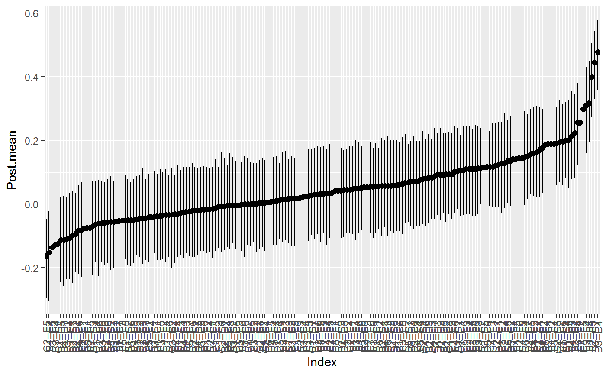#> BGGM: Bayesian Gaussian Graphical Models #> --- #> Type: continuous #> Analytic: FALSE #> Formula: #> Posterior Samples: 250 #> Credible Interval: 95 % #> --- #> Call: #> estimate(Y = Y, type = "continuous", iter = 250) #> --- #> Selected: #> #> 1 2 3 4 5 6 7 8 9 10 11 12 #> 1 0.000 0.190 0.000 0.318 0.143 0.000 0.000 0 0.000 0.000 0.201 0.000 #> 2 0.190 0.000 0.399 0.000 0.000 0.000 0.000 0 0.000 0.000 0.000 0.000 #> 3 0.000 0.399 0.000 0.256 0.000 0.000 0.000 0 0.000 0.000 0.000 0.000 #> 4 0.318 0.000 0.256 0.000 0.214 0.000 0.159 0 0.178 0.000 0.000 0.000 #> 5 0.143 0.000 0.000 0.214 0.000 0.189 0.000 0 0.000 0.000 0.000 0.000 #> 6 0.000 0.000 0.000 0.000 0.189 0.000 0.195 0 0.000 0.000 0.000 0.000 #> 7 0.000 0.000 0.000 0.159 0.000 0.195 0.000 0 0.000 0.000 0.000 0.191 #> 8 0.000 0.000 0.000 0.000 0.000 0.000 0.000 0 0.000 0.000 0.000 0.000 #> 9 0.000 0.000 0.000 0.178 0.000 0.000 0.000 0 0.000 0.000 0.223 0.201 #> 10 0.000 0.000 0.000 0.000 0.000 0.000 0.000 0 0.000 0.000 0.478 -0.135 #> 11 0.201 0.000 0.000 0.000 0.000 0.000 0.000 0 0.223 0.478 0.000 0.000 #> 12 0.000 0.000 0.000 0.000 0.000 0.000 0.191 0 0.201 -0.135 0.000 0.000 #> 13 0.000 0.000 0.000 0.000 0.000 0.000 0.000 0 0.000 0.000 0.000 0.000 #> 14 0.000 0.000 0.000 0.000 0.000 0.000 0.000 0 0.152 0.000 0.000 0.000 #> 15 0.000 0.000 0.000 0.000 0.190 0.000 0.000 0 0.000 0.000 0.170 0.000 #> 16 0.000 0.163 0.000 0.000 0.000 0.000 0.000 0 0.000 0.000 0.000 0.000 #> 17 0.000 0.000 0.000 0.000 0.000 0.000 0.000 0 0.000 0.000 0.000 0.000 #> 18 -0.152 0.000 0.000 0.000 0.187 0.000 0.000 0 0.000 0.000 0.000 0.000 #> 19 0.000 0.000 0.000 0.000 0.000 0.000 -0.163 0 0.000 0.000 0.000 0.299 #> 20 0.000 0.144 0.000 0.000 0.000 0.000 0.000 0 0.000 0.000 0.000 0.000 #> 13 14 15 16 17 18 19 20 #> 1 0.000 0.000 0.000 0.000 0.000 -0.152 0.000 0.000 #> 2 0.000 0.000 0.000 0.163 0.000 0.000 0.000 0.144 #> 3 0.000 0.000 0.000 0.000 0.000 0.000 0.000 0.000 #> 4 0.000 0.000 0.000 0.000 0.000 0.000 0.000 0.000 #> 5 0.000 0.000 0.190 0.000 0.000 0.187 0.000 0.000 #> 6 0.000 0.000 0.000 0.000 0.000 0.000 0.000 0.000 #> 7 0.000 0.000 0.000 0.000 0.000 0.000 -0.163 0.000 #> 8 0.000 0.000 0.000 0.000 0.000 0.000 0.000 0.000 #> 9 0.000 0.152 0.000 0.000 0.000 0.000 0.000 0.000 #> 10 0.000 0.000 0.000 0.000 0.000 0.000 0.000 0.000 #> 11 0.000 0.000 0.170 0.000 0.000 0.000 0.000 0.000 #> 12 0.000 0.000 0.000 0.000 0.000 0.000 0.299 0.000 #> 13 0.000 0.446 0.000 0.000 0.000 0.000 0.135 0.000 #> 14 0.446 0.000 0.000 0.000 0.000 0.000 0.000 0.000 #> 15 0.000 0.000 0.000 0.256 0.000 0.000 0.000 0.000 #> 16 0.000 0.000 0.256 0.000 0.000 0.000 0.000 0.000 #> 17 0.000 0.000 0.000 0.000 0.000 0.311 0.000 0.000 #> 18 0.000 0.000 0.000 0.000 0.311 0.000 0.158 0.000 #> 19 0.135 0.000 0.000 0.000 0.000 0.158 0.000 0.196 #> 20 0.000 0.000 0.000 0.000 0.000 0.000 0.196 0.000 #> ---#> $plt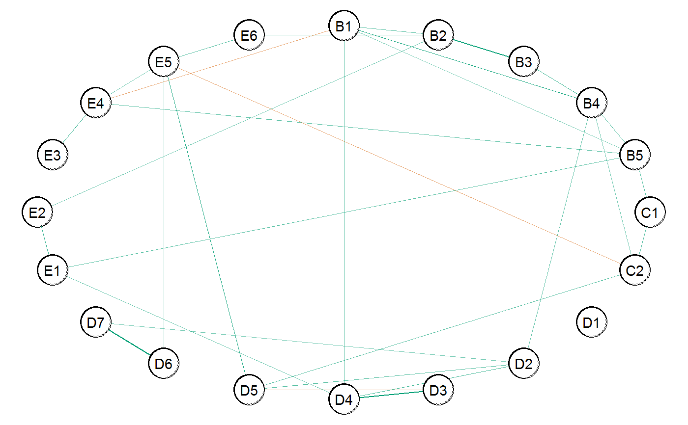#># ordinal # fit model (note + 1, due to zeros) fit <- estimate(Y + 1, type = "ordinal", iter = 250)#>#>#> BGGM: Bayesian Gaussian Graphical Models #> --- #> Type: ordinal #> Analytic: FALSE #> Formula: #> Posterior Samples: 250 #> Observations (n): #> Nodes (p): 20 #> Relations: 190 #> --- #> Call: #> estimate(Y = Y + 1, type = "ordinal", iter = 250) #> --- #> Estimates: #> Relation Post.mean Post.sd Cred.lb Cred.ub #> B1--B2 0.211 0.079 0.064 0.372 #> B1--B3 0.021 0.088 -0.143 0.184 #> B2--B3 0.390 0.083 0.214 0.543 #> B1--B4 0.322 0.074 0.185 0.469 #> B2--B4 -0.035 0.090 -0.214 0.148 #> B3--B4 0.283 0.088 0.108 0.439 #> B1--B5 0.118 0.086 -0.067 0.262 #> B2--B5 0.032 0.088 -0.130 0.197 #> B3--B5 0.128 0.088 -0.027 0.294 #> B4--B5 0.249 0.084 0.078 0.409 #> B1--C1 -0.027 0.080 -0.182 0.117 #> B2--C1 -0.020 0.079 -0.178 0.138 #> B3--C1 -0.064 0.079 -0.223 0.098 #> B4--C1 0.129 0.074 -0.021 0.267 #> B5--C1 0.198 0.087 0.020 0.370 #> B1--C2 -0.045 0.072 -0.189 0.086 #> B2--C2 0.093 0.075 -0.044 0.224 #> B3--C2 -0.012 0.081 -0.177 0.151 #> B4--C2 0.174 0.074 0.027 0.312 #> B5--C2 0.127 0.072 -0.007 0.249 #> C1--C2 0.205 0.075 0.064 0.351 #> B1--D1 0.062 0.084 -0.097 0.241 #> B2--D1 0.006 0.088 -0.164 0.162 #> B3--D1 -0.018 0.089 -0.188 0.155 #> B4--D1 -0.048 0.083 -0.190 0.124 #> B5--D1 -0.075 0.089 -0.274 0.087 #> C1--D1 0.134 0.081 -0.032 0.293 #> C2--D1 0.099 0.084 -0.052 0.253 #> B1--D2 -0.050 0.083 -0.215 0.107 #> B2--D2 -0.126 0.090 -0.306 0.052 #> B3--D2 -0.163 0.088 -0.330 0.012 #> B4--D2 0.213 0.081 0.057 0.368 #> B5--D2 -0.079 0.083 -0.235 0.068 #> C1--D2 -0.147 0.089 -0.315 0.026 #> C2--D2 -0.031 0.086 -0.182 0.147 #> D1--D2 0.034 0.077 -0.106 0.177 #> B1--D3 -0.078 0.089 -0.242 0.112 #> B2--D3 0.034 0.082 -0.114 0.199 #> B3--D3 0.026 0.093 -0.140 0.198 #> B4--D3 0.087 0.089 -0.089 0.263 #> B5--D3 0.082 0.083 -0.090 0.251 #> C1--D3 0.079 0.081 -0.087 0.231 #> C2--D3 0.005 0.085 -0.159 0.192 #> D1--D3 0.103 0.082 -0.056 0.258 #> D2--D3 0.098 0.085 -0.054 0.244 #> B1--D4 0.216 0.076 0.066 0.357 #> B2--D4 0.070 0.092 -0.111 0.248 #> B3--D4 0.031 0.089 -0.136 0.197 #> B4--D4 0.041 0.092 -0.131 0.231 #> B5--D4 0.009 0.081 -0.149 0.165 #> C1--D4 -0.041 0.089 -0.207 0.135 #> C2--D4 0.000 0.077 -0.147 0.132 #> D1--D4 0.011 0.089 -0.159 0.186 #> D2--D4 0.264 0.076 0.090 0.394 #> D3--D4 0.498 0.068 0.362 0.617 #> B1--D5 0.090 0.086 -0.101 0.253 #> B2--D5 0.108 0.087 -0.080 0.291 #> B3--D5 0.133 0.090 -0.042 0.322 #> B4--D5 -0.127 0.083 -0.289 0.027 #> B5--D5 -0.014 0.081 -0.153 0.163 #> C1--D5 -0.019 0.073 -0.171 0.136 #> C2--D5 0.237 0.072 0.089 0.368 #> D1--D5 -0.022 0.079 -0.184 0.119 #> D2--D5 0.252 0.071 0.120 0.393 #> D3--D5 -0.110 0.088 -0.282 0.060 #> D4--D5 0.013 0.087 -0.148 0.170 #> B1--D6 0.070 0.087 -0.087 0.222 #> B2--D6 0.016 0.088 -0.174 0.188 #> B3--D6 -0.098 0.091 -0.263 0.068 #> B4--D6 -0.043 0.084 -0.189 0.115 #> B5--D6 -0.090 0.084 -0.259 0.069 #> C1--D6 0.095 0.075 -0.047 0.231 #> C2--D6 0.007 0.081 -0.142 0.166 #> D1--D6 -0.023 0.073 -0.158 0.117 #> D2--D6 0.065 0.090 -0.089 0.241 #> D3--D6 -0.013 0.088 -0.179 0.166 #> D4--D6 0.073 0.083 -0.078 0.235 #> D5--D6 0.118 0.089 -0.070 0.277 #> B1--D7 0.028 0.092 -0.152 0.211 #> B2--D7 -0.066 0.095 -0.249 0.101 #> B3--D7 0.129 0.088 -0.036 0.290 #> B4--D7 -0.162 0.084 -0.322 -0.013 #> B5--D7 0.007 0.081 -0.150 0.158 #> C1--D7 0.019 0.070 -0.112 0.137 #> C2--D7 0.093 0.077 -0.070 0.256 #> D1--D7 -0.061 0.075 -0.207 0.078 #> D2--D7 0.160 0.077 -0.005 0.308 #> D3--D7 -0.034 0.095 -0.220 0.150 #> D4--D7 -0.058 0.077 -0.201 0.077 #> D5--D7 0.057 0.084 -0.082 0.227 #> D6--D7 0.479 0.065 0.355 0.593 #> B1--E1 0.057 0.081 -0.111 0.218 #> B2--E1 -0.112 0.087 -0.269 0.050 #> B3--E1 -0.003 0.089 -0.169 0.148 #> B4--E1 -0.001 0.082 -0.176 0.166 #> B5--E1 0.203 0.081 0.054 0.366 #> C1--E1 -0.042 0.082 -0.193 0.109 #> C2--E1 0.096 0.087 -0.076 0.244 #> D1--E1 0.080 0.082 -0.068 0.229 #> D2--E1 0.133 0.082 -0.026 0.279 #> D3--E1 -0.120 0.080 -0.274 0.037 #> D4--E1 0.182 0.076 0.023 0.335 #> D5--E1 0.041 0.085 -0.117 0.208 #> D6--E1 -0.011 0.089 -0.184 0.156 #> D7--E1 0.126 0.082 -0.022 0.289 #> B1--E2 -0.093 0.087 -0.256 0.066 #> B2--E2 0.203 0.086 0.049 0.382 #> B3--E2 0.010 0.102 -0.206 0.180 #> B4--E2 -0.064 0.094 -0.229 0.119 #> B5--E2 -0.064 0.106 -0.262 0.142 #> C1--E2 -0.010 0.091 -0.199 0.149 #> C2--E2 0.030 0.091 -0.154 0.189 #> D1--E2 0.111 0.081 -0.030 0.276 #> D2--E2 -0.064 0.093 -0.229 0.099 #> D3--E2 0.138 0.086 -0.033 0.292 #> D4--E2 0.008 0.082 -0.148 0.164 #> D5--E2 -0.009 0.094 -0.203 0.168 #> D6--E2 0.095 0.100 -0.098 0.283 #> D7--E2 0.048 0.089 -0.143 0.201 #> E1--E2 0.300 0.076 0.135 0.426 #> B1--E3 -0.052 0.072 -0.191 0.085 #> B2--E3 -0.015 0.080 -0.169 0.156 #> B3--E3 0.135 0.085 -0.017 0.288 #> B4--E3 0.003 0.081 -0.158 0.149 #> B5--E3 -0.030 0.080 -0.191 0.110 #> C1--E3 0.118 0.073 -0.034 0.246 #> C2--E3 -0.012 0.082 -0.165 0.147 #> D1--E3 0.134 0.081 -0.033 0.273 #> D2--E3 0.116 0.074 -0.027 0.249 #> D3--E3 -0.077 0.082 -0.245 0.089 #> D4--E3 0.033 0.078 -0.129 0.166 #> D5--E3 -0.028 0.075 -0.182 0.142 #> D6--E3 0.076 0.075 -0.069 0.209 #> D7--E3 0.035 0.077 -0.123 0.186 #> E1--E3 -0.012 0.082 -0.168 0.146 #> E2--E3 0.053 0.087 -0.122 0.219 #> B1--E4 -0.150 0.073 -0.291 -0.014 #> B2--E4 0.120 0.083 -0.025 0.279 #> B3--E4 0.072 0.088 -0.097 0.236 #> B4--E4 -0.002 0.088 -0.174 0.170 #> B5--E4 0.192 0.082 0.040 0.345 #> C1--E4 -0.031 0.083 -0.199 0.132 #> C2--E4 0.040 0.073 -0.101 0.188 #> D1--E4 -0.083 0.086 -0.259 0.072 #> D2--E4 0.008 0.082 -0.140 0.178 #> D3--E4 -0.134 0.079 -0.280 0.020 #> D4--E4 0.055 0.078 -0.099 0.205 #> D5--E4 0.016 0.086 -0.136 0.177 #> D6--E4 0.193 0.080 0.039 0.341 #> D7--E4 -0.166 0.083 -0.336 0.004 #> E1--E4 0.017 0.084 -0.134 0.209 #> E2--E4 0.127 0.088 -0.048 0.283 #> E3--E4 0.311 0.076 0.143 0.468 #> B1--E5 0.058 0.078 -0.095 0.204 #> B2--E5 -0.106 0.085 -0.285 0.070 #> B3--E5 0.085 0.089 -0.074 0.256 #> B4--E5 -0.070 0.082 -0.238 0.082 #> B5--E5 0.024 0.093 -0.152 0.188 #> C1--E5 0.010 0.085 -0.159 0.181 #> C2--E5 -0.230 0.074 -0.368 -0.086 #> D1--E5 0.180 0.086 0.006 0.333 #> D2--E5 0.052 0.089 -0.100 0.237 #> D3--E5 0.086 0.090 -0.102 0.239 #> D4--E5 0.015 0.093 -0.159 0.189 #> D5--E5 0.307 0.074 0.176 0.446 #> D6--E5 0.136 0.079 -0.034 0.277 #> D7--E5 0.053 0.081 -0.119 0.204 #> E1--E5 0.026 0.081 -0.135 0.156 #> E2--E5 -0.019 0.095 -0.197 0.166 #> E3--E5 -0.063 0.072 -0.186 0.074 #> E4--E5 0.160 0.082 0.015 0.315 #> B1--E6 0.031 0.081 -0.125 0.175 #> B2--E6 0.162 0.077 0.007 0.318 #> B3--E6 0.084 0.084 -0.067 0.235 #> B4--E6 0.009 0.080 -0.127 0.147 #> B5--E6 0.086 0.076 -0.051 0.228 #> C1--E6 -0.019 0.075 -0.159 0.130 #> C2--E6 -0.051 0.073 -0.193 0.089 #> D1--E6 -0.007 0.074 -0.138 0.152 #> D2--E6 -0.011 0.088 -0.188 0.160 #> D3--E6 0.026 0.078 -0.113 0.168 #> D4--E6 -0.077 0.082 -0.233 0.082 #> D5--E6 0.002 0.075 -0.150 0.137 #> D6--E6 0.132 0.074 -0.019 0.274 #> D7--E6 0.062 0.082 -0.096 0.212 #> E1--E6 0.023 0.085 -0.138 0.178 #> E2--E6 -0.071 0.095 -0.243 0.119 #> E3--E6 0.047 0.080 -0.130 0.202 #> E4--E6 0.080 0.078 -0.074 0.208 #> E5--E6 0.203 0.069 0.068 0.353 #> ---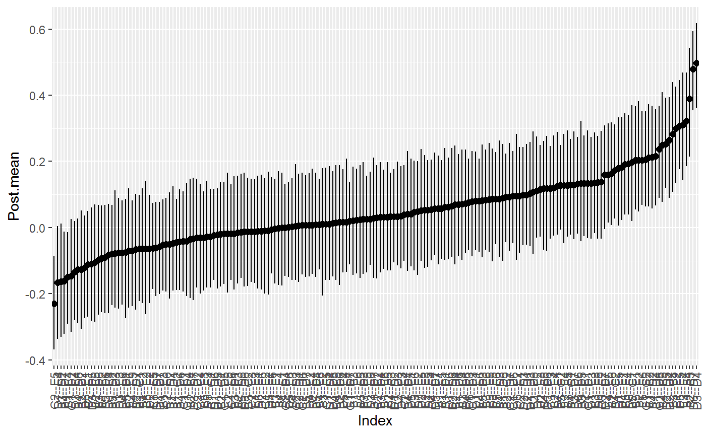#> BGGM: Bayesian Gaussian Graphical Models #> --- #> Type: ordinal #> Analytic: FALSE #> Formula: #> Posterior Samples: 250 #> Credible Interval: 95 % #> --- #> Call: #> estimate(Y = Y + 1, type = "ordinal", iter = 250) #> --- #> Selected: #> #> 1 2 3 4 5 6 7 8 9 10 11 12 #> 1 0.000 0.211 0.000 0.322 0.000 0.000 0.000 0.00 0.000 0.000 0.216 0.000 #> 2 0.211 0.000 0.390 0.000 0.000 0.000 0.000 0.00 0.000 0.000 0.000 0.000 #> 3 0.000 0.390 0.000 0.283 0.000 0.000 0.000 0.00 0.000 0.000 0.000 0.000 #> 4 0.322 0.000 0.283 0.000 0.249 0.000 0.174 0.00 0.213 0.000 0.000 0.000 #> 5 0.000 0.000 0.000 0.249 0.000 0.198 0.000 0.00 0.000 0.000 0.000 0.000 #> 6 0.000 0.000 0.000 0.000 0.198 0.000 0.205 0.00 0.000 0.000 0.000 0.000 #> 7 0.000 0.000 0.000 0.174 0.000 0.205 0.000 0.00 0.000 0.000 0.000 0.237 #> 8 0.000 0.000 0.000 0.000 0.000 0.000 0.000 0.00 0.000 0.000 0.000 0.000 #> 9 0.000 0.000 0.000 0.213 0.000 0.000 0.000 0.00 0.000 0.000 0.264 0.252 #> 10 0.000 0.000 0.000 0.000 0.000 0.000 0.000 0.00 0.000 0.000 0.498 0.000 #> 11 0.216 0.000 0.000 0.000 0.000 0.000 0.000 0.00 0.264 0.498 0.000 0.000 #> 12 0.000 0.000 0.000 0.000 0.000 0.000 0.237 0.00 0.252 0.000 0.000 0.000 #> 13 0.000 0.000 0.000 0.000 0.000 0.000 0.000 0.00 0.000 0.000 0.000 0.000 #> 14 0.000 0.000 0.000 -0.162 0.000 0.000 0.000 0.00 0.000 0.000 0.000 0.000 #> 15 0.000 0.000 0.000 0.000 0.203 0.000 0.000 0.00 0.000 0.000 0.182 0.000 #> 16 0.000 0.203 0.000 0.000 0.000 0.000 0.000 0.00 0.000 0.000 0.000 0.000 #> 17 0.000 0.000 0.000 0.000 0.000 0.000 0.000 0.00 0.000 0.000 0.000 0.000 #> 18 -0.150 0.000 0.000 0.000 0.192 0.000 0.000 0.00 0.000 0.000 0.000 0.000 #> 19 0.000 0.000 0.000 0.000 0.000 0.000 -0.230 0.18 0.000 0.000 0.000 0.307 #> 20 0.000 0.162 0.000 0.000 0.000 0.000 0.000 0.00 0.000 0.000 0.000 0.000 #> 13 14 15 16 17 18 19 20 #> 1 0.000 0.000 0.000 0.000 0.000 -0.150 0.000 0.000 #> 2 0.000 0.000 0.000 0.203 0.000 0.000 0.000 0.162 #> 3 0.000 0.000 0.000 0.000 0.000 0.000 0.000 0.000 #> 4 0.000 -0.162 0.000 0.000 0.000 0.000 0.000 0.000 #> 5 0.000 0.000 0.203 0.000 0.000 0.192 0.000 0.000 #> 6 0.000 0.000 0.000 0.000 0.000 0.000 0.000 0.000 #> 7 0.000 0.000 0.000 0.000 0.000 0.000 -0.230 0.000 #> 8 0.000 0.000 0.000 0.000 0.000 0.000 0.180 0.000 #> 9 0.000 0.000 0.000 0.000 0.000 0.000 0.000 0.000 #> 10 0.000 0.000 0.000 0.000 0.000 0.000 0.000 0.000 #> 11 0.000 0.000 0.182 0.000 0.000 0.000 0.000 0.000 #> 12 0.000 0.000 0.000 0.000 0.000 0.000 0.307 0.000 #> 13 0.000 0.479 0.000 0.000 0.000 0.193 0.000 0.000 #> 14 0.479 0.000 0.000 0.000 0.000 0.000 0.000 0.000 #> 15 0.000 0.000 0.000 0.300 0.000 0.000 0.000 0.000 #> 16 0.000 0.000 0.300 0.000 0.000 0.000 0.000 0.000 #> 17 0.000 0.000 0.000 0.000 0.000 0.311 0.000 0.000 #> 18 0.193 0.000 0.000 0.000 0.311 0.000 0.160 0.000 #> 19 0.000 0.000 0.000 0.000 0.000 0.160 0.000 0.203 #> 20 0.000 0.000 0.000 0.000 0.000 0.000 0.203 0.000 #> ---#> $plt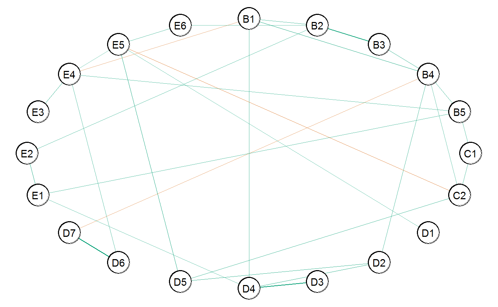#>######################### ### example 2: binary ### ######################### # data Y <- women_math # fit model fit <- estimate(Y, type = "binary", iter = 250)#>#>#> BGGM: Bayesian Gaussian Graphical Models #> --- #> Type: binary #> Analytic: FALSE #> Formula: #> Posterior Samples: 250 #> Observations (n): #> Nodes (p): 6 #> Relations: 15 #> --- #> Call: #> estimate(Y = Y, type = "binary", iter = 250) #> --- #> Estimates: #> Relation Post.mean Post.sd Cred.lb Cred.ub #> 1--2 0.003 0.050 -0.091 0.098 #> 1--3 0.022 0.053 -0.071 0.127 #> 2--3 0.047 0.053 -0.045 0.170 #> 1--4 0.023 0.044 -0.063 0.109 #> 2--4 0.148 0.047 0.057 0.247 #> 3--4 -0.060 0.057 -0.164 0.033 #> 1--5 0.018 0.048 -0.084 0.103 #> 2--5 -0.244 0.049 -0.338 -0.144 #> 3--5 0.138 0.056 0.016 0.233 #> 4--5 -0.323 0.050 -0.407 -0.225 #> 1--6 -0.007 0.057 -0.119 0.106 #> 2--6 -0.012 0.052 -0.116 0.087 #> 3--6 0.390 0.046 0.298 0.485 #> 4--6 0.214 0.059 0.102 0.329 #> 5--6 -0.046 0.067 -0.162 0.120 #> ---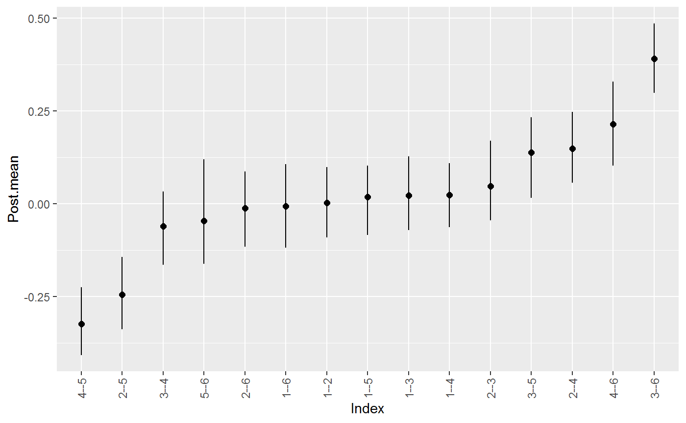#> BGGM: Bayesian Gaussian Graphical Models #> --- #> Type: binary #> Analytic: FALSE #> Formula: #> Posterior Samples: 250 #> Credible Interval: 95 % #> --- #> Call: #> estimate(Y = Y, type = "binary", iter = 250) #> --- #> Selected: #> #> 1 2 3 4 5 6 #> 1 0 0.000 0.000 0.000 0.000 0.000 #> 2 0 0.000 0.000 0.148 -0.244 0.000 #> 3 0 0.000 0.000 0.000 0.138 0.390 #> 4 0 0.148 0.000 0.000 -0.323 0.214 #> 5 0 -0.244 0.138 -0.323 0.000 0.000 #> 6 0 0.000 0.390 0.214 0.000 0.000 #> ---#> $plt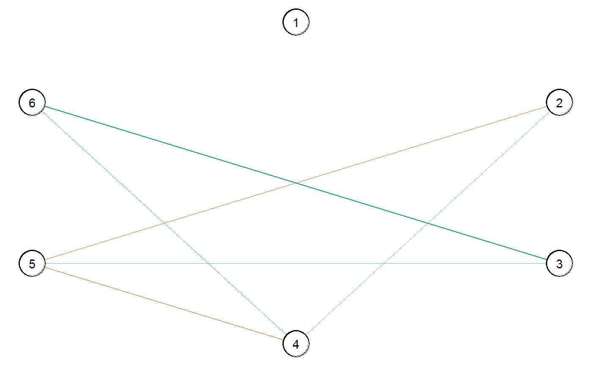#>######################################## ### example 3: control with formula ### ######################################## # (the following works with all data types) # controlling for gender Y <- bfi # Y contains two control variables # (gender and education) # the following is incorrect, as education is # automatically included in Y ! incorrect <- estimate(Y, formula = ~ gender, iter = 250)#>#># to control for only gender # (remove education) Y <- subset(Y, select = - education) # fit model fit <- estimate(Y, formula = ~ gender, iter = 250)#>#>#> BGGM: Bayesian Gaussian Graphical Models #> --- #> Type: continuous #> Analytic: FALSE #> Formula: #> Posterior Samples: 250 #> Observations (n): #> Nodes (p): 25 #> Relations: 300 #> --- #> Call: #> estimate(Y = Y, formula = ~gender, iter = 250) #> --- #> Estimates: #> Relation Post.mean Post.sd Cred.lb Cred.ub #> A1--A2 -0.230 0.019 -0.264 -0.196 #> A1--A3 -0.127 0.021 -0.166 -0.087 #> A2--A3 0.264 0.018 0.228 0.298 #> A1--A4 -0.021 0.020 -0.059 0.024 #> A2--A4 0.158 0.020 0.117 0.201 #> A3--A4 0.157 0.020 0.121 0.193 #> A1--A5 -0.029 0.021 -0.070 0.010 #> A2--A5 0.099 0.020 0.057 0.135 #> A3--A5 0.257 0.019 0.221 0.296 #> A4--A5 0.068 0.020 0.029 0.107 #> A1--C1 0.041 0.020 -0.001 0.079 #> A2--C1 -0.023 0.021 -0.060 0.026 #> A3--C1 0.005 0.019 -0.035 0.039 #> A4--C1 -0.047 0.021 -0.089 -0.006 #> A5--C1 0.024 0.022 -0.015 0.065 #> A1--C2 0.048 0.019 0.008 0.088 #> A2--C2 -0.025 0.019 -0.060 0.011 #> A3--C2 0.017 0.019 -0.022 0.055 #> A4--C2 0.148 0.020 0.108 0.189 #> A5--C2 -0.029 0.021 -0.065 0.011 #> C1--C2 0.257 0.019 0.218 0.291 #> A1--C3 0.035 0.020 -0.006 0.070 #> A2--C3 0.117 0.021 0.080 0.159 #> A3--C3 0.001 0.020 -0.039 0.040 #> A4--C3 -0.036 0.021 -0.072 0.005 #> A5--C3 0.026 0.022 -0.016 0.067 #> C1--C3 0.123 0.020 0.084 0.162 #> C2--C3 0.162 0.021 0.116 0.205 #> A1--C4 0.084 0.019 0.047 0.123 #> A2--C4 -0.015 0.022 -0.060 0.029 #> A3--C4 0.003 0.020 -0.037 0.038 #> A4--C4 -0.018 0.020 -0.056 0.017 #> A5--C4 0.004 0.020 -0.030 0.040 #> C1--C4 -0.152 0.021 -0.190 -0.108 #> C2--C4 -0.223 0.019 -0.253 -0.183 #> C3--C4 -0.138 0.020 -0.178 -0.097 #> A1--C5 -0.026 0.022 -0.066 0.013 #> A2--C5 0.037 0.021 -0.007 0.075 #> A3--C5 -0.007 0.019 -0.043 0.032 #> A4--C5 -0.109 0.021 -0.149 -0.067 #> A5--C5 0.021 0.021 -0.019 0.067 #> C1--C5 -0.036 0.021 -0.076 0.007 #> C2--C5 -0.062 0.021 -0.107 -0.023 #> C3--C5 -0.173 0.018 -0.212 -0.140 #> C4--C5 0.284 0.017 0.250 0.319 #> A1--E1 0.053 0.019 0.014 0.094 #> A2--E1 -0.046 0.021 -0.088 -0.008 #> A3--E1 0.035 0.020 -0.003 0.074 #> A4--E1 0.008 0.021 -0.033 0.047 #> A5--E1 0.005 0.020 -0.036 0.042 #> C1--E1 0.034 0.020 -0.014 0.072 #> C2--E1 0.093 0.020 0.052 0.132 #> C3--E1 0.023 0.022 -0.015 0.067 #> C4--E1 0.057 0.021 0.018 0.097 #> C5--E1 -0.094 0.019 -0.129 -0.057 #> A1--E2 0.005 0.021 -0.029 0.048 #> A2--E2 -0.031 0.022 -0.072 0.011 #> A3--E2 -0.026 0.021 -0.068 0.015 #> A4--E2 0.014 0.021 -0.026 0.056 #> A5--E2 -0.011 0.020 -0.051 0.027 #> C1--E2 0.026 0.019 -0.008 0.066 #> C2--E2 0.033 0.020 -0.009 0.071 #> C3--E2 0.023 0.019 -0.015 0.063 #> C4--E2 0.046 0.021 0.005 0.086 #> C5--E2 0.082 0.020 0.044 0.119 #> E1--E2 0.248 0.018 0.217 0.282 #> A1--E3 0.053 0.020 0.017 0.090 #> A2--E3 -0.023 0.020 -0.064 0.017 #> A3--E3 0.139 0.019 0.101 0.177 #> A4--E3 -0.001 0.020 -0.042 0.037 #> A5--E3 0.143 0.020 0.106 0.181 #> C1--E3 -0.033 0.020 -0.070 0.006 #> C2--E3 0.024 0.020 -0.019 0.061 #> C3--E3 -0.009 0.020 -0.047 0.028 #> C4--E3 0.050 0.019 0.007 0.084 #> C5--E3 -0.053 0.019 -0.088 -0.017 #> E1--E3 -0.086 0.020 -0.124 -0.049 #> E2--E3 -0.093 0.020 -0.128 -0.055 #> A1--E4 0.051 0.021 0.012 0.093 #> A2--E4 0.023 0.018 -0.014 0.056 #> A3--E4 0.072 0.020 0.034 0.114 #> A4--E4 0.108 0.019 0.065 0.140 #> A5--E4 0.219 0.018 0.187 0.257 #> C1--E4 0.082 0.021 0.035 0.120 #> C2--E4 0.015 0.021 -0.022 0.055 #> C3--E4 -0.022 0.021 -0.061 0.023 #> C4--E4 0.054 0.020 0.015 0.091 #> C5--E4 -0.023 0.020 -0.059 0.016 #> E1--E4 -0.180 0.020 -0.220 -0.138 #> E2--E4 -0.267 0.019 -0.301 -0.231 #> E3--E4 0.113 0.021 0.071 0.150 #> A1--E5 0.051 0.020 0.008 0.088 #> A2--E5 0.152 0.021 0.117 0.194 #> A3--E5 -0.017 0.020 -0.055 0.020 #> A4--E5 -0.020 0.021 -0.064 0.020 #> A5--E5 0.024 0.021 -0.018 0.065 #> C1--E5 0.105 0.020 0.068 0.146 #> C2--E5 0.090 0.020 0.058 0.131 #> C3--E5 0.048 0.021 0.007 0.089 #> C4--E5 -0.038 0.020 -0.080 0.002 #> C5--E5 -0.042 0.021 -0.085 -0.004 #> E1--E5 -0.095 0.020 -0.134 -0.057 #> E2--E5 -0.135 0.020 -0.169 -0.098 #> E3--E5 0.137 0.022 0.093 0.179 #> E4--E5 0.019 0.020 -0.020 0.056 #> A1--N1 0.055 0.019 0.022 0.092 #> A2--N1 -0.060 0.019 -0.097 -0.023 #> A3--N1 0.042 0.021 0.004 0.083 #> A4--N1 0.044 0.019 0.010 0.086 #> A5--N1 -0.068 0.020 -0.107 -0.027 #> C1--N1 -0.033 0.020 -0.070 0.006 #> C2--N1 -0.005 0.019 -0.044 0.033 #> C3--N1 -0.003 0.019 -0.044 0.030 #> C4--N1 0.067 0.021 0.024 0.102 #> C5--N1 -0.035 0.021 -0.077 0.002 #> E1--N1 -0.050 0.021 -0.092 -0.009 #> E2--N1 -0.016 0.022 -0.061 0.024 #> E3--N1 0.000 0.023 -0.044 0.041 #> E4--N1 -0.041 0.021 -0.083 0.000 #> E5--N1 0.109 0.021 0.066 0.147 #> A1--N2 0.054 0.020 0.020 0.093 #> A2--N2 0.050 0.020 0.008 0.091 #> A3--N2 -0.007 0.021 -0.047 0.034 #> A4--N2 -0.095 0.021 -0.135 -0.055 #> A5--N2 -0.045 0.018 -0.079 -0.008 #> C1--N2 0.001 0.021 -0.037 0.041 #> C2--N2 0.009 0.023 -0.031 0.053 #> C3--N2 -0.002 0.021 -0.042 0.039 #> C4--N2 -0.055 0.020 -0.096 -0.015 #> C5--N2 0.089 0.020 0.049 0.126 #> E1--N2 -0.028 0.020 -0.064 0.012 #> E2--N2 0.070 0.021 0.031 0.110 #> E3--N2 -0.016 0.021 -0.057 0.027 #> E4--N2 0.010 0.021 -0.032 0.055 #> E5--N2 0.083 0.021 0.042 0.123 #> N1--N2 0.552 0.013 0.526 0.579 #> A1--N3 0.031 0.020 -0.008 0.073 #> A2--N3 -0.018 0.021 -0.060 0.021 #> A3--N3 0.024 0.022 -0.019 0.065 #> A4--N3 0.029 0.020 -0.011 0.065 #> A5--N3 -0.019 0.021 -0.059 0.020 #> C1--N3 0.049 0.022 0.003 0.088 #> C2--N3 0.008 0.021 -0.034 0.043 #> C3--N3 -0.013 0.021 -0.049 0.029 #> C4--N3 0.021 0.021 -0.017 0.058 #> C5--N3 0.028 0.020 -0.011 0.065 #> E1--N3 -0.007 0.021 -0.048 0.031 #> E2--N3 -0.019 0.021 -0.061 0.026 #> E3--N3 0.060 0.021 0.021 0.100 #> E4--N3 0.025 0.021 -0.014 0.067 #> E5--N3 -0.048 0.021 -0.093 -0.010 #> N1--N3 0.219 0.020 0.180 0.258 #> N2--N3 0.183 0.019 0.143 0.217 #> A1--N4 -0.044 0.021 -0.087 -0.004 #> A2--N4 0.038 0.022 -0.009 0.080 #> A3--N4 0.009 0.020 -0.030 0.045 #> A4--N4 -0.041 0.020 -0.077 -0.005 #> A5--N4 -0.020 0.020 -0.057 0.017 #> C1--N4 -0.014 0.021 -0.053 0.030 #> C2--N4 0.049 0.019 0.013 0.083 #> C3--N4 -0.005 0.019 -0.045 0.030 #> C4--N4 0.057 0.018 0.022 0.093 #> C5--N4 0.146 0.019 0.111 0.182 #> E1--N4 0.116 0.020 0.075 0.154 #> E2--N4 0.050 0.020 0.010 0.084 #> E3--N4 0.003 0.020 -0.034 0.043 #> E4--N4 -0.101 0.020 -0.139 -0.061 #> E5--N4 -0.064 0.020 -0.105 -0.027 #> N1--N4 0.078 0.019 0.041 0.111 #> N2--N4 0.032 0.019 -0.002 0.069 #> N3--N4 0.291 0.018 0.260 0.323 #> A1--N5 -0.016 0.020 -0.055 0.024 #> A2--N5 0.058 0.021 0.020 0.100 #> A3--N5 -0.040 0.021 -0.079 0.002 #> A4--N5 0.023 0.022 -0.016 0.067 #> A5--N5 0.032 0.019 -0.005 0.068 #> C1--N5 0.008 0.021 -0.033 0.047 #> C2--N5 0.103 0.019 0.066 0.137 #> C3--N5 0.028 0.020 -0.009 0.069 #> C4--N5 0.081 0.021 0.037 0.123 #> C5--N5 -0.009 0.020 -0.047 0.029 #> E1--N5 -0.072 0.021 -0.113 -0.027 #> E2--N5 0.133 0.020 0.093 0.172 #> E3--N5 0.001 0.021 -0.038 0.040 #> E4--N5 0.026 0.021 -0.014 0.063 #> E5--N5 -0.101 0.020 -0.141 -0.063 #> N1--N5 0.115 0.020 0.074 0.149 #> N2--N5 0.025 0.020 -0.013 0.062 #> N3--N5 0.148 0.021 0.104 0.189 #> N4--N5 0.167 0.019 0.132 0.203 #> A1--O1 0.049 0.020 0.011 0.091 #> A2--O1 0.018 0.022 -0.023 0.060 #> A3--O1 0.011 0.021 -0.030 0.052 #> A4--O1 -0.001 0.020 -0.041 0.038 #> A5--O1 0.006 0.020 -0.034 0.048 #> C1--O1 0.028 0.022 -0.016 0.070 #> C2--O1 0.042 0.021 0.002 0.086 #> C3--O1 0.019 0.019 -0.016 0.051 #> C4--O1 0.032 0.020 -0.006 0.073 #> C5--O1 0.000 0.022 -0.040 0.045 #> E1--O1 0.017 0.019 -0.018 0.053 #> E2--O1 0.003 0.020 -0.037 0.041 #> E3--O1 0.146 0.020 0.105 0.186 #> E4--O1 0.004 0.020 -0.030 0.046 #> E5--O1 0.127 0.020 0.089 0.164 #> N1--O1 -0.010 0.021 -0.050 0.031 #> N2--O1 -0.010 0.021 -0.054 0.026 #> N3--O1 0.001 0.021 -0.037 0.039 #> N4--O1 0.028 0.020 -0.013 0.069 #> N5--O1 -0.048 0.022 -0.092 -0.011 #> A1--O2 0.041 0.020 0.000 0.079 #> A2--O2 0.043 0.019 0.008 0.077 #> A3--O2 0.027 0.018 -0.010 0.058 #> A4--O2 0.026 0.020 -0.011 0.064 #> A5--O2 0.022 0.021 -0.022 0.059 #> C1--O2 -0.038 0.021 -0.082 0.001 #> C2--O2 0.042 0.020 0.000 0.079 #> C3--O2 0.026 0.019 -0.009 0.063 #> C4--O2 0.116 0.020 0.078 0.150 #> C5--O2 0.044 0.021 0.002 0.086 #> E1--O2 0.023 0.020 -0.015 0.059 #> E2--O2 0.012 0.021 -0.024 0.051 #> E3--O2 0.020 0.021 -0.017 0.060 #> E4--O2 0.079 0.020 0.043 0.116 #> E5--O2 0.013 0.021 -0.027 0.053 #> N1--O2 0.013 0.020 -0.026 0.051 #> N2--O2 0.045 0.021 0.004 0.083 #> N3--O2 -0.007 0.020 -0.045 0.031 #> N4--O2 -0.022 0.021 -0.059 0.021 #> N5--O2 0.083 0.020 0.038 0.116 #> O1--O2 -0.108 0.020 -0.147 -0.072 #> A1--O3 -0.015 0.021 -0.049 0.028 #> A2--O3 -0.008 0.021 -0.049 0.036 #> A3--O3 0.051 0.021 0.011 0.095 #> A4--O3 -0.040 0.022 -0.082 -0.001 #> A5--O3 0.040 0.021 -0.007 0.078 #> C1--O3 0.050 0.021 0.011 0.096 #> C2--O3 0.112 0.021 0.070 0.151 #> C3--O3 -0.026 0.020 -0.063 0.012 #> C4--O3 0.081 0.020 0.039 0.115 #> C5--O3 0.022 0.021 -0.019 0.059 #> E1--O3 -0.066 0.020 -0.110 -0.028 #> E2--O3 -0.047 0.022 -0.090 -0.006 #> E3--O3 0.190 0.021 0.150 0.232 #> E4--O3 0.031 0.020 -0.004 0.069 #> E5--O3 0.077 0.022 0.035 0.120 #> N1--O3 0.015 0.021 -0.026 0.055 #> N2--O3 -0.001 0.021 -0.041 0.039 #> N3--O3 -0.020 0.020 -0.061 0.018 #> N4--O3 0.013 0.022 -0.026 0.054 #> N5--O3 0.016 0.021 -0.023 0.054 #> O1--O3 0.177 0.020 0.138 0.211 #> O2--O3 -0.187 0.019 -0.222 -0.154 #> A1--O4 -0.083 0.019 -0.118 -0.044 #> A2--O4 0.063 0.021 0.023 0.103 #> A3--O4 -0.003 0.020 -0.047 0.034 #> A4--O4 -0.021 0.021 -0.064 0.016 #> A5--O4 0.022 0.020 -0.017 0.061 #> C1--O4 0.086 0.021 0.049 0.125 #> C2--O4 -0.007 0.022 -0.047 0.032 #> C3--O4 0.023 0.021 -0.017 0.070 #> C4--O4 0.028 0.020 -0.005 0.066 #> C5--O4 0.068 0.021 0.032 0.109 #> E1--O4 0.058 0.021 0.019 0.098 #> E2--O4 0.122 0.020 0.083 0.162 #> E3--O4 0.032 0.021 -0.012 0.069 #> E4--O4 -0.018 0.020 -0.055 0.025 #> E5--O4 -0.011 0.021 -0.053 0.028 #> N1--O4 -0.034 0.020 -0.073 0.006 #> N2--O4 0.040 0.021 0.001 0.078 #> N3--O4 0.055 0.019 0.019 0.093 #> N4--O4 0.086 0.021 0.043 0.128 #> N5--O4 0.024 0.023 -0.027 0.064 #> O1--O4 0.109 0.020 0.073 0.147 #> O2--O4 -0.004 0.020 -0.048 0.034 #> O3--O4 0.108 0.019 0.069 0.147 #> A1--O5 0.043 0.019 0.005 0.078 #> A2--O5 -0.041 0.021 -0.083 -0.004 #> A3--O5 0.022 0.021 -0.017 0.062 #> A4--O5 0.025 0.021 -0.013 0.066 #> A5--O5 -0.008 0.020 -0.050 0.032 #> C1--O5 -0.033 0.021 -0.072 0.012 #> C2--O5 0.019 0.020 -0.017 0.063 #> C3--O5 0.066 0.021 0.025 0.105 #> C4--O5 0.121 0.021 0.086 0.164 #> C5--O5 -0.008 0.020 -0.043 0.031 #> E1--O5 0.058 0.020 0.021 0.092 #> E2--O5 0.025 0.021 -0.013 0.063 #> E3--O5 -0.018 0.021 -0.059 0.020 #> E4--O5 0.117 0.020 0.078 0.155 #> E5--O5 0.011 0.022 -0.031 0.052 #> N1--O5 0.076 0.020 0.038 0.115 #> N2--O5 -0.068 0.020 -0.106 -0.032 #> N3--O5 -0.002 0.021 -0.041 0.039 #> N4--O5 -0.009 0.019 -0.046 0.030 #> N5--O5 0.057 0.021 0.013 0.099 #> O1--O5 -0.095 0.019 -0.132 -0.057 #> O2--O5 0.187 0.019 0.149 0.224 #> O3--O5 -0.166 0.021 -0.208 -0.128 #> O4--O5 -0.113 0.023 -0.163 -0.067 #> ---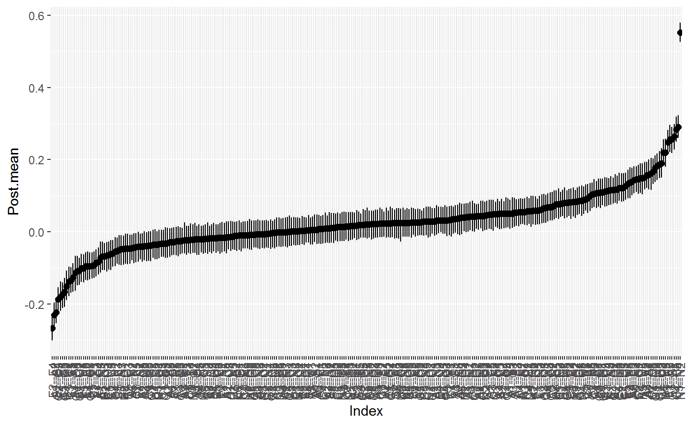#> BGGM: Bayesian Gaussian Graphical Models #> --- #> Type: continuous #> Analytic: FALSE #> Formula: #> Posterior Samples: 250 #> Credible Interval: 95 % #> --- #> Call: #> estimate(Y = Y, formula = ~gender, iter = 250) #> --- #> Selected: #> #> 1 2 3 4 5 6 7 8 9 10 11 #> 1 0.000 -0.230 -0.127 0.000 0.000 0.000 0.048 0.000 0.084 0.000 0.053 #> 2 -0.230 0.000 0.264 0.158 0.099 0.000 0.000 0.117 0.000 0.000 -0.046 #> 3 -0.127 0.264 0.000 0.157 0.257 0.000 0.000 0.000 0.000 0.000 0.000 #> 4 0.000 0.158 0.157 0.000 0.068 -0.047 0.148 0.000 0.000 -0.109 0.000 #> 5 0.000 0.099 0.257 0.068 0.000 0.000 0.000 0.000 0.000 0.000 0.000 #> 6 0.000 0.000 0.000 -0.047 0.000 0.000 0.257 0.123 -0.152 0.000 0.000 #> 7 0.048 0.000 0.000 0.148 0.000 0.257 0.000 0.162 -0.223 -0.062 0.093 #> 8 0.000 0.117 0.000 0.000 0.000 0.123 0.162 0.000 -0.138 -0.173 0.000 #> 9 0.084 0.000 0.000 0.000 0.000 -0.152 -0.223 -0.138 0.000 0.284 0.057 #> 10 0.000 0.000 0.000 -0.109 0.000 0.000 -0.062 -0.173 0.284 0.000 -0.094 #> 11 0.053 -0.046 0.000 0.000 0.000 0.000 0.093 0.000 0.057 -0.094 0.000 #> 12 0.000 0.000 0.000 0.000 0.000 0.000 0.000 0.000 0.046 0.082 0.248 #> 13 0.053 0.000 0.139 0.000 0.143 0.000 0.000 0.000 0.050 -0.053 -0.086 #> 14 0.051 0.000 0.072 0.108 0.219 0.082 0.000 0.000 0.054 0.000 -0.180 #> 15 0.051 0.152 0.000 0.000 0.000 0.105 0.090 0.048 0.000 -0.042 -0.095 #> 16 0.055 -0.060 0.042 0.044 -0.068 0.000 0.000 0.000 0.067 0.000 -0.050 #> 17 0.054 0.050 0.000 -0.095 -0.045 0.000 0.000 0.000 -0.055 0.089 0.000 #> 18 0.000 0.000 0.000 0.000 0.000 0.049 0.000 0.000 0.000 0.000 0.000 #> 19 -0.044 0.000 0.000 -0.041 0.000 0.000 0.049 0.000 0.057 0.146 0.116 #> 20 0.000 0.058 0.000 0.000 0.000 0.000 0.103 0.000 0.081 0.000 -0.072 #> 21 0.049 0.000 0.000 0.000 0.000 0.000 0.042 0.000 0.000 0.000 0.000 #> 22 0.041 0.043 0.000 0.000 0.000 0.000 0.042 0.000 0.116 0.044 0.000 #> 23 0.000 0.000 0.051 -0.040 0.000 0.050 0.112 0.000 0.081 0.000 -0.066 #> 24 -0.083 0.063 0.000 0.000 0.000 0.086 0.000 0.000 0.000 0.068 0.058 #> 25 0.043 -0.041 0.000 0.000 0.000 0.000 0.000 0.066 0.121 0.000 0.058 #> 12 13 14 15 16 17 18 19 20 21 22 #> 1 0.000 0.053 0.051 0.051 0.055 0.054 0.000 -0.044 0.000 0.049 0.041 #> 2 0.000 0.000 0.000 0.152 -0.060 0.050 0.000 0.000 0.058 0.000 0.043 #> 3 0.000 0.139 0.072 0.000 0.042 0.000 0.000 0.000 0.000 0.000 0.000 #> 4 0.000 0.000 0.108 0.000 0.044 -0.095 0.000 -0.041 0.000 0.000 0.000 #> 5 0.000 0.143 0.219 0.000 -0.068 -0.045 0.000 0.000 0.000 0.000 0.000 #> 6 0.000 0.000 0.082 0.105 0.000 0.000 0.049 0.000 0.000 0.000 0.000 #> 7 0.000 0.000 0.000 0.090 0.000 0.000 0.000 0.049 0.103 0.042 0.042 #> 8 0.000 0.000 0.000 0.048 0.000 0.000 0.000 0.000 0.000 0.000 0.000 #> 9 0.046 0.050 0.054 0.000 0.067 -0.055 0.000 0.057 0.081 0.000 0.116 #> 10 0.082 -0.053 0.000 -0.042 0.000 0.089 0.000 0.146 0.000 0.000 0.044 #> 11 0.248 -0.086 -0.180 -0.095 -0.050 0.000 0.000 0.116 -0.072 0.000 0.000 #> 12 0.000 -0.093 -0.267 -0.135 0.000 0.070 0.000 0.050 0.133 0.000 0.000 #> 13 -0.093 0.000 0.113 0.137 0.000 0.000 0.060 0.000 0.000 0.146 0.000 #> 14 -0.267 0.113 0.000 0.000 -0.041 0.000 0.000 -0.101 0.000 0.000 0.079 #> 15 -0.135 0.137 0.000 0.000 0.109 0.083 -0.048 -0.064 -0.101 0.127 0.000 #> 16 0.000 0.000 -0.041 0.109 0.000 0.552 0.219 0.078 0.115 0.000 0.000 #> 17 0.070 0.000 0.000 0.083 0.552 0.000 0.183 0.000 0.000 0.000 0.045 #> 18 0.000 0.060 0.000 -0.048 0.219 0.183 0.000 0.291 0.148 0.000 0.000 #> 19 0.050 0.000 -0.101 -0.064 0.078 0.000 0.291 0.000 0.167 0.000 0.000 #> 20 0.133 0.000 0.000 -0.101 0.115 0.000 0.148 0.167 0.000 -0.048 0.083 #> 21 0.000 0.146 0.000 0.127 0.000 0.000 0.000 0.000 -0.048 0.000 -0.108 #> 22 0.000 0.000 0.079 0.000 0.000 0.045 0.000 0.000 0.083 -0.108 0.000 #> 23 -0.047 0.190 0.000 0.077 0.000 0.000 0.000 0.000 0.000 0.177 -0.187 #> 24 0.122 0.000 0.000 0.000 0.000 0.040 0.055 0.086 0.000 0.109 0.000 #> 25 0.000 0.000 0.117 0.000 0.076 -0.068 0.000 0.000 0.057 -0.095 0.187 #> 23 24 25 #> 1 0.000 -0.083 0.043 #> 2 0.000 0.063 -0.041 #> 3 0.051 0.000 0.000 #> 4 -0.040 0.000 0.000 #> 5 0.000 0.000 0.000 #> 6 0.050 0.086 0.000 #> 7 0.112 0.000 0.000 #> 8 0.000 0.000 0.066 #> 9 0.081 0.000 0.121 #> 10 0.000 0.068 0.000 #> 11 -0.066 0.058 0.058 #> 12 -0.047 0.122 0.000 #> 13 0.190 0.000 0.000 #> 14 0.000 0.000 0.117 #> 15 0.077 0.000 0.000 #> 16 0.000 0.000 0.076 #> 17 0.000 0.040 -0.068 #> 18 0.000 0.055 0.000 #> 19 0.000 0.086 0.000 #> 20 0.000 0.000 0.057 #> 21 0.177 0.109 -0.095 #> 22 -0.187 0.000 0.187 #> 23 0.000 0.108 -0.166 #> 24 0.108 0.000 -0.113 #> 25 -0.166 -0.113 0.000 #> ---#> $plt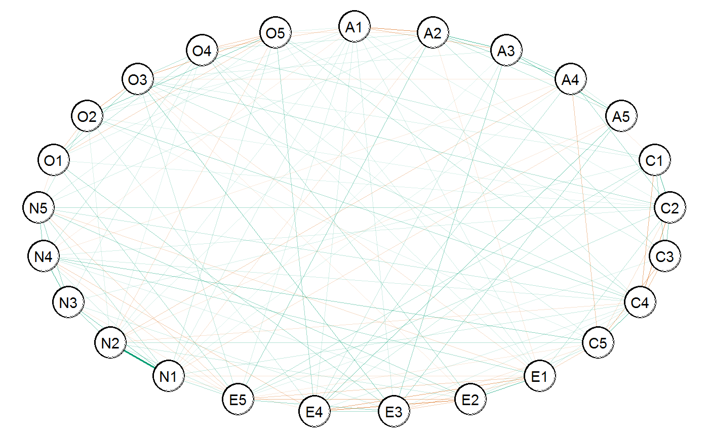#># control for an intercation (for some reason ?) # (gender by education) # data Y <- bfi # fit model fit <- estimate(Y, formula = ~ gender * education, iter = 250)#>#>#> BGGM: Bayesian Gaussian Graphical Models #> --- #> Type: continuous #> Analytic: FALSE #> Formula: #> Posterior Samples: 250 #> Observations (n): #> Nodes (p): 25 #> Relations: 300 #> --- #> Call: #> estimate(Y = Y, formula = ~gender * education, iter = 250) #> --- #> Estimates: #> Relation Post.mean Post.sd Cred.lb Cred.ub #> A1--A2 -0.228 0.022 -0.272 -0.189 #> A1--A3 -0.132 0.020 -0.166 -0.091 #> A2--A3 0.241 0.019 0.205 0.278 #> A1--A4 -0.017 0.023 -0.062 0.024 #> A2--A4 0.156 0.021 0.116 0.196 #> A3--A4 0.159 0.021 0.119 0.198 #> A1--A5 -0.034 0.022 -0.076 0.006 #> A2--A5 0.100 0.020 0.064 0.139 #> A3--A5 0.246 0.019 0.211 0.282 #> A4--A5 0.063 0.022 0.018 0.106 #> A1--C1 0.041 0.021 0.003 0.081 #> A2--C1 -0.025 0.020 -0.064 0.017 #> A3--C1 -0.004 0.022 -0.048 0.039 #> A4--C1 -0.042 0.020 -0.080 -0.009 #> A5--C1 0.026 0.021 -0.014 0.068 #> A1--C2 0.038 0.021 -0.006 0.078 #> A2--C2 -0.022 0.023 -0.064 0.027 #> A3--C2 0.019 0.022 -0.020 0.058 #> A4--C2 0.145 0.022 0.104 0.183 #> A5--C2 -0.030 0.021 -0.068 0.015 #> C1--C2 0.252 0.021 0.212 0.292 #> A1--C3 0.049 0.021 0.011 0.088 #> A2--C3 0.119 0.021 0.084 0.163 #> A3--C3 0.015 0.021 -0.023 0.054 #> A4--C3 -0.030 0.021 -0.066 0.013 #> A5--C3 0.024 0.023 -0.014 0.070 #> C1--C3 0.136 0.020 0.098 0.179 #> C2--C3 0.154 0.022 0.112 0.194 #> A1--C4 0.071 0.020 0.034 0.107 #> A2--C4 -0.021 0.022 -0.065 0.021 #> A3--C4 -0.003 0.023 -0.049 0.039 #> A4--C4 -0.012 0.020 -0.051 0.028 #> A5--C4 0.008 0.020 -0.026 0.044 #> C1--C4 -0.146 0.020 -0.185 -0.108 #> C2--C4 -0.222 0.020 -0.259 -0.185 #> C3--C4 -0.133 0.021 -0.179 -0.094 #> A1--C5 -0.019 0.020 -0.058 0.020 #> A2--C5 0.046 0.021 0.010 0.087 #> A3--C5 0.005 0.020 -0.031 0.046 #> A4--C5 -0.112 0.020 -0.155 -0.074 #> A5--C5 0.012 0.021 -0.032 0.049 #> C1--C5 -0.029 0.023 -0.071 0.014 #> C2--C5 -0.067 0.023 -0.111 -0.023 #> C3--C5 -0.181 0.021 -0.221 -0.140 #> C4--C5 0.284 0.020 0.245 0.320 #> A1--E1 0.063 0.020 0.027 0.101 #> A2--E1 -0.053 0.023 -0.093 -0.007 #> A3--E1 0.034 0.021 -0.011 0.077 #> A4--E1 0.002 0.021 -0.039 0.046 #> A5--E1 0.011 0.020 -0.027 0.051 #> C1--E1 0.031 0.021 -0.011 0.073 #> C2--E1 0.100 0.022 0.054 0.141 #> C3--E1 0.008 0.022 -0.036 0.049 #> C4--E1 0.053 0.020 0.013 0.086 #> C5--E1 -0.094 0.020 -0.131 -0.055 #> A1--E2 0.006 0.021 -0.035 0.045 #> A2--E2 -0.025 0.022 -0.069 0.023 #> A3--E2 -0.020 0.022 -0.059 0.024 #> A4--E2 0.014 0.021 -0.028 0.055 #> A5--E2 -0.006 0.021 -0.046 0.034 #> C1--E2 0.025 0.020 -0.013 0.063 #> C2--E2 0.037 0.020 0.003 0.077 #> C3--E2 0.035 0.021 -0.007 0.072 #> C4--E2 0.053 0.021 0.017 0.096 #> C5--E2 0.076 0.021 0.036 0.118 #> E1--E2 0.245 0.021 0.206 0.288 #> A1--E3 0.051 0.022 0.008 0.093 #> A2--E3 -0.028 0.022 -0.070 0.016 #> A3--E3 0.131 0.022 0.091 0.174 #> A4--E3 0.005 0.022 -0.034 0.044 #> A5--E3 0.152 0.023 0.110 0.197 #> C1--E3 -0.034 0.020 -0.075 -0.001 #> C2--E3 0.032 0.020 -0.012 0.068 #> C3--E3 0.001 0.022 -0.041 0.047 #> C4--E3 0.057 0.021 0.016 0.096 #> C5--E3 -0.058 0.024 -0.103 -0.011 #> E1--E3 -0.098 0.022 -0.140 -0.058 #> E2--E3 -0.105 0.021 -0.146 -0.066 #> A1--E4 0.056 0.020 0.019 0.100 #> A2--E4 0.026 0.020 -0.013 0.067 #> A3--E4 0.079 0.021 0.039 0.130 #> A4--E4 0.123 0.022 0.082 0.166 #> A5--E4 0.218 0.022 0.181 0.259 #> C1--E4 0.082 0.021 0.044 0.124 #> C2--E4 0.015 0.021 -0.027 0.054 #> C3--E4 -0.027 0.022 -0.067 0.015 #> C4--E4 0.048 0.022 0.001 0.090 #> C5--E4 -0.016 0.023 -0.064 0.031 #> E1--E4 -0.175 0.021 -0.214 -0.131 #> E2--E4 -0.262 0.021 -0.302 -0.220 #> E3--E4 0.118 0.022 0.077 0.159 #> A1--E5 0.062 0.022 0.022 0.104 #> A2--E5 0.155 0.021 0.109 0.198 #> A3--E5 -0.004 0.020 -0.043 0.038 #> A4--E5 -0.029 0.021 -0.068 0.012 #> A5--E5 0.023 0.023 -0.023 0.067 #> C1--E5 0.101 0.022 0.058 0.143 #> C2--E5 0.082 0.020 0.046 0.121 #> C3--E5 0.053 0.019 0.018 0.093 #> C4--E5 -0.030 0.020 -0.072 0.008 #> C5--E5 -0.054 0.020 -0.089 -0.014 #> E1--E5 -0.083 0.019 -0.119 -0.046 #> E2--E5 -0.134 0.022 -0.174 -0.087 #> E3--E5 0.138 0.020 0.100 0.178 #> E4--E5 0.036 0.022 -0.007 0.079 #> A1--N1 0.054 0.020 0.016 0.091 #> A2--N1 -0.059 0.020 -0.096 -0.017 #> A3--N1 0.050 0.021 0.011 0.092 #> A4--N1 0.043 0.022 -0.003 0.091 #> A5--N1 -0.064 0.022 -0.104 -0.019 #> C1--N1 -0.026 0.020 -0.064 0.015 #> C2--N1 -0.011 0.020 -0.049 0.029 #> C3--N1 -0.012 0.023 -0.056 0.028 #> C4--N1 0.062 0.023 0.019 0.106 #> C5--N1 -0.039 0.021 -0.081 0.001 #> E1--N1 -0.050 0.022 -0.092 -0.008 #> E2--N1 -0.023 0.022 -0.070 0.017 #> E3--N1 -0.002 0.023 -0.047 0.041 #> E4--N1 -0.054 0.023 -0.093 -0.011 #> E5--N1 0.109 0.021 0.069 0.149 #> A1--N2 0.049 0.021 0.006 0.088 #> A2--N2 0.042 0.021 0.006 0.090 #> A3--N2 -0.015 0.022 -0.056 0.024 #> A4--N2 -0.089 0.022 -0.129 -0.042 #> A5--N2 -0.048 0.022 -0.090 -0.007 #> C1--N2 0.002 0.020 -0.035 0.038 #> C2--N2 0.012 0.020 -0.026 0.048 #> C3--N2 0.004 0.021 -0.042 0.040 #> C4--N2 -0.055 0.022 -0.092 -0.007 #> C5--N2 0.094 0.023 0.048 0.135 #> E1--N2 -0.037 0.021 -0.079 0.006 #> E2--N2 0.070 0.022 0.027 0.117 #> E3--N2 -0.015 0.021 -0.056 0.024 #> E4--N2 0.008 0.022 -0.031 0.048 #> E5--N2 0.093 0.022 0.050 0.135 #> N1--N2 0.540 0.015 0.510 0.569 #> A1--N3 0.035 0.021 -0.005 0.074 #> A2--N3 0.003 0.021 -0.035 0.042 #> A3--N3 0.031 0.021 -0.017 0.070 #> A4--N3 0.017 0.021 -0.025 0.057 #> A5--N3 -0.020 0.023 -0.067 0.030 #> C1--N3 0.057 0.019 0.018 0.093 #> C2--N3 0.002 0.021 -0.039 0.046 #> C3--N3 -0.009 0.021 -0.045 0.036 #> C4--N3 0.012 0.021 -0.027 0.051 #> C5--N3 0.029 0.023 -0.013 0.075 #> E1--N3 -0.002 0.022 -0.048 0.037 #> E2--N3 -0.016 0.020 -0.058 0.023 #> E3--N3 0.069 0.022 0.023 0.109 #> E4--N3 0.014 0.023 -0.029 0.057 #> E5--N3 -0.048 0.020 -0.088 -0.007 #> N1--N3 0.221 0.020 0.179 0.257 #> N2--N3 0.187 0.021 0.150 0.227 #> A1--N4 -0.030 0.021 -0.072 0.012 #> A2--N4 0.040 0.021 0.000 0.089 #> A3--N4 -0.005 0.021 -0.043 0.038 #> A4--N4 -0.027 0.022 -0.067 0.013 #> A5--N4 -0.013 0.022 -0.053 0.032 #> C1--N4 -0.011 0.021 -0.047 0.033 #> C2--N4 0.058 0.022 0.014 0.097 #> C3--N4 -0.014 0.022 -0.059 0.023 #> C4--N4 0.067 0.021 0.026 0.106 #> C5--N4 0.137 0.020 0.099 0.179 #> E1--N4 0.115 0.022 0.078 0.161 #> E2--N4 0.055 0.021 0.014 0.091 #> E3--N4 0.010 0.022 -0.033 0.053 #> E4--N4 -0.102 0.021 -0.141 -0.055 #> E5--N4 -0.068 0.021 -0.107 -0.031 #> N1--N4 0.082 0.022 0.040 0.121 #> N2--N4 0.027 0.021 -0.013 0.071 #> N3--N4 0.289 0.021 0.248 0.325 #> A1--N5 -0.029 0.023 -0.076 0.009 #> A2--N5 0.045 0.022 0.002 0.086 #> A3--N5 -0.047 0.022 -0.093 -0.008 #> A4--N5 0.033 0.022 -0.008 0.079 #> A5--N5 0.029 0.022 -0.017 0.068 #> C1--N5 0.005 0.022 -0.035 0.056 #> C2--N5 0.104 0.022 0.059 0.143 #> C3--N5 0.030 0.023 -0.011 0.071 #> C4--N5 0.092 0.023 0.052 0.139 #> C5--N5 0.000 0.023 -0.045 0.042 #> E1--N5 -0.070 0.022 -0.112 -0.032 #> E2--N5 0.135 0.022 0.090 0.175 #> E3--N5 -0.009 0.023 -0.053 0.034 #> E4--N5 0.037 0.019 0.002 0.076 #> E5--N5 -0.088 0.022 -0.126 -0.042 #> N1--N5 0.117 0.020 0.081 0.156 #> N2--N5 0.031 0.023 -0.010 0.074 #> N3--N5 0.146 0.020 0.104 0.182 #> N4--N5 0.162 0.020 0.122 0.207 #> A1--O1 0.039 0.022 -0.004 0.080 #> A2--O1 0.015 0.021 -0.025 0.052 #> A3--O1 0.015 0.023 -0.026 0.059 #> A4--O1 0.000 0.022 -0.043 0.039 #> A5--O1 -0.004 0.023 -0.046 0.040 #> C1--O1 0.034 0.021 -0.009 0.074 #> C2--O1 0.043 0.022 0.000 0.084 #> C3--O1 0.011 0.021 -0.035 0.054 #> C4--O1 0.023 0.022 -0.021 0.065 #> C5--O1 0.005 0.023 -0.040 0.050 #> E1--O1 0.020 0.020 -0.018 0.060 #> E2--O1 -0.001 0.020 -0.041 0.043 #> E3--O1 0.146 0.020 0.108 0.181 #> E4--O1 -0.013 0.022 -0.062 0.030 #> E5--O1 0.137 0.022 0.096 0.177 #> N1--O1 -0.006 0.021 -0.050 0.033 #> N2--O1 -0.015 0.022 -0.051 0.028 #> N3--O1 -0.003 0.021 -0.043 0.040 #> N4--O1 0.021 0.021 -0.022 0.060 #> N5--O1 -0.061 0.022 -0.099 -0.015 #> A1--O2 0.041 0.021 -0.001 0.081 #> A2--O2 0.056 0.022 0.008 0.095 #> A3--O2 0.045 0.020 0.006 0.082 #> A4--O2 0.019 0.021 -0.022 0.056 #> A5--O2 0.016 0.021 -0.023 0.058 #> C1--O2 -0.042 0.022 -0.082 -0.001 #> C2--O2 0.043 0.021 0.003 0.081 #> C3--O2 0.023 0.021 -0.018 0.064 #> C4--O2 0.114 0.021 0.075 0.155 #> C5--O2 0.048 0.020 0.006 0.083 #> E1--O2 0.035 0.021 -0.007 0.071 #> E2--O2 0.003 0.021 -0.039 0.046 #> E3--O2 0.023 0.022 -0.019 0.062 #> E4--O2 0.078 0.020 0.036 0.119 #> E5--O2 0.005 0.021 -0.037 0.046 #> N1--O2 0.017 0.021 -0.022 0.062 #> N2--O2 0.051 0.022 0.009 0.097 #> N3--O2 -0.011 0.020 -0.051 0.028 #> N4--O2 -0.013 0.022 -0.053 0.026 #> N5--O2 0.083 0.023 0.042 0.128 #> O1--O2 -0.104 0.020 -0.145 -0.064 #> A1--O3 -0.003 0.022 -0.046 0.041 #> A2--O3 -0.003 0.022 -0.045 0.041 #> A3--O3 0.060 0.022 0.015 0.104 #> A4--O3 -0.064 0.021 -0.100 -0.023 #> A5--O3 0.033 0.021 -0.013 0.072 #> C1--O3 0.048 0.021 0.003 0.090 #> C2--O3 0.113 0.021 0.073 0.155 #> C3--O3 -0.027 0.021 -0.066 0.011 #> C4--O3 0.089 0.020 0.050 0.126 #> C5--O3 0.021 0.022 -0.022 0.065 #> E1--O3 -0.057 0.022 -0.094 -0.013 #> E2--O3 -0.058 0.022 -0.098 -0.017 #> E3--O3 0.196 0.021 0.153 0.234 #> E4--O3 0.035 0.021 -0.011 0.072 #> E5--O3 0.063 0.022 0.020 0.104 #> N1--O3 0.017 0.020 -0.023 0.053 #> N2--O3 -0.001 0.023 -0.046 0.042 #> N3--O3 -0.020 0.021 -0.063 0.022 #> N4--O3 0.010 0.022 -0.032 0.049 #> N5--O3 0.028 0.021 -0.010 0.069 #> O1--O3 0.175 0.020 0.136 0.211 #> O2--O3 -0.190 0.021 -0.227 -0.147 #> A1--O4 -0.083 0.022 -0.123 -0.040 #> A2--O4 0.039 0.021 0.001 0.081 #> A3--O4 0.007 0.021 -0.033 0.049 #> A4--O4 -0.023 0.022 -0.065 0.019 #> A5--O4 0.028 0.022 -0.010 0.072 #> C1--O4 0.067 0.021 0.028 0.107 #> C2--O4 -0.010 0.021 -0.049 0.033 #> C3--O4 0.025 0.023 -0.022 0.063 #> C4--O4 0.032 0.021 -0.007 0.073 #> C5--O4 0.055 0.020 0.017 0.101 #> E1--O4 0.037 0.021 -0.003 0.076 #> E2--O4 0.124 0.019 0.085 0.161 #> E3--O4 0.026 0.020 -0.015 0.066 #> E4--O4 -0.009 0.020 -0.046 0.031 #> E5--O4 -0.026 0.021 -0.064 0.010 #> N1--O4 -0.022 0.020 -0.056 0.023 #> N2--O4 0.037 0.020 -0.006 0.072 #> N3--O4 0.056 0.023 0.011 0.100 #> N4--O4 0.094 0.021 0.050 0.133 #> N5--O4 0.022 0.021 -0.019 0.060 #> O1--O4 0.114 0.020 0.074 0.152 #> O2--O4 -0.017 0.021 -0.056 0.026 #> O3--O4 0.092 0.021 0.051 0.132 #> A1--O5 0.051 0.022 0.007 0.094 #> A2--O5 -0.052 0.022 -0.097 -0.011 #> A3--O5 0.020 0.022 -0.021 0.059 #> A4--O5 0.018 0.022 -0.024 0.060 #> A5--O5 0.003 0.021 -0.037 0.043 #> C1--O5 -0.041 0.021 -0.082 0.003 #> C2--O5 0.027 0.022 -0.017 0.071 #> C3--O5 0.075 0.022 0.031 0.117 #> C4--O5 0.123 0.021 0.085 0.166 #> C5--O5 -0.008 0.022 -0.051 0.035 #> E1--O5 0.054 0.020 0.016 0.091 #> E2--O5 0.016 0.021 -0.027 0.056 #> E3--O5 -0.024 0.021 -0.067 0.017 #> E4--O5 0.112 0.021 0.066 0.160 #> E5--O5 0.006 0.022 -0.035 0.052 #> N1--O5 0.083 0.021 0.041 0.119 #> N2--O5 -0.076 0.021 -0.116 -0.035 #> N3--O5 0.004 0.021 -0.035 0.041 #> N4--O5 -0.015 0.020 -0.054 0.026 #> N5--O5 0.053 0.022 0.012 0.093 #> O1--O5 -0.090 0.021 -0.127 -0.049 #> O2--O5 0.184 0.020 0.147 0.223 #> O3--O5 -0.182 0.022 -0.225 -0.142 #> O4--O5 -0.116 0.022 -0.163 -0.071 #> ---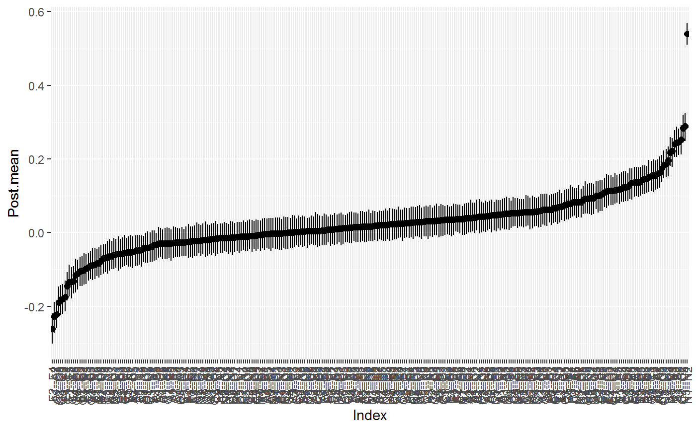#> BGGM: Bayesian Gaussian Graphical Models #> --- #> Type: continuous #> Analytic: FALSE #> Formula: #> Posterior Samples: 250 #> Credible Interval: 95 % #> --- #> Call: #> estimate(Y = Y, formula = ~gender * education, iter = 250) #> --- #> Selected: #> #> 1 2 3 4 5 6 7 8 9 10 11 #> 1 0.000 -0.228 -0.132 0.000 0.000 0.041 0.000 0.049 0.071 0.000 0.063 #> 2 -0.228 0.000 0.241 0.156 0.100 0.000 0.000 0.119 0.000 0.046 -0.053 #> 3 -0.132 0.241 0.000 0.159 0.246 0.000 0.000 0.000 0.000 0.000 0.000 #> 4 0.000 0.156 0.159 0.000 0.063 -0.042 0.145 0.000 0.000 -0.112 0.000 #> 5 0.000 0.100 0.246 0.063 0.000 0.000 0.000 0.000 0.000 0.000 0.000 #> 6 0.041 0.000 0.000 -0.042 0.000 0.000 0.252 0.136 -0.146 0.000 0.000 #> 7 0.000 0.000 0.000 0.145 0.000 0.252 0.000 0.154 -0.222 -0.067 0.100 #> 8 0.049 0.119 0.000 0.000 0.000 0.136 0.154 0.000 -0.133 -0.181 0.000 #> 9 0.071 0.000 0.000 0.000 0.000 -0.146 -0.222 -0.133 0.000 0.284 0.053 #> 10 0.000 0.046 0.000 -0.112 0.000 0.000 -0.067 -0.181 0.284 0.000 -0.094 #> 11 0.063 -0.053 0.000 0.000 0.000 0.000 0.100 0.000 0.053 -0.094 0.000 #> 12 0.000 0.000 0.000 0.000 0.000 0.000 0.037 0.000 0.053 0.076 0.245 #> 13 0.051 0.000 0.131 0.000 0.152 -0.034 0.000 0.000 0.057 -0.058 -0.098 #> 14 0.056 0.000 0.079 0.123 0.218 0.082 0.000 0.000 0.048 0.000 -0.175 #> 15 0.062 0.155 0.000 0.000 0.000 0.101 0.082 0.053 0.000 -0.054 -0.083 #> 16 0.054 -0.059 0.050 0.000 -0.064 0.000 0.000 0.000 0.062 0.000 -0.050 #> 17 0.049 0.042 0.000 -0.089 -0.048 0.000 0.000 0.000 -0.055 0.094 0.000 #> 18 0.000 0.000 0.000 0.000 0.000 0.057 0.000 0.000 0.000 0.000 0.000 #> 19 0.000 0.000 0.000 0.000 0.000 0.000 0.058 0.000 0.067 0.137 0.115 #> 20 0.000 0.045 -0.047 0.000 0.000 0.000 0.104 0.000 0.092 0.000 -0.070 #> 21 0.000 0.000 0.000 0.000 0.000 0.000 0.043 0.000 0.000 0.000 0.000 #> 22 0.000 0.056 0.045 0.000 0.000 -0.042 0.043 0.000 0.114 0.048 0.000 #> 23 0.000 0.000 0.060 -0.064 0.000 0.048 0.113 0.000 0.089 0.000 -0.057 #> 24 -0.083 0.039 0.000 0.000 0.000 0.067 0.000 0.000 0.000 0.055 0.000 #> 25 0.051 -0.052 0.000 0.000 0.000 0.000 0.000 0.075 0.123 0.000 0.054 #> 12 13 14 15 16 17 18 19 20 21 22 #> 1 0.000 0.051 0.056 0.062 0.054 0.049 0.000 0.000 0.000 0.000 0.000 #> 2 0.000 0.000 0.000 0.155 -0.059 0.042 0.000 0.000 0.045 0.000 0.056 #> 3 0.000 0.131 0.079 0.000 0.050 0.000 0.000 0.000 -0.047 0.000 0.045 #> 4 0.000 0.000 0.123 0.000 0.000 -0.089 0.000 0.000 0.000 0.000 0.000 #> 5 0.000 0.152 0.218 0.000 -0.064 -0.048 0.000 0.000 0.000 0.000 0.000 #> 6 0.000 -0.034 0.082 0.101 0.000 0.000 0.057 0.000 0.000 0.000 -0.042 #> 7 0.037 0.000 0.000 0.082 0.000 0.000 0.000 0.058 0.104 0.043 0.043 #> 8 0.000 0.000 0.000 0.053 0.000 0.000 0.000 0.000 0.000 0.000 0.000 #> 9 0.053 0.057 0.048 0.000 0.062 -0.055 0.000 0.067 0.092 0.000 0.114 #> 10 0.076 -0.058 0.000 -0.054 0.000 0.094 0.000 0.137 0.000 0.000 0.048 #> 11 0.245 -0.098 -0.175 -0.083 -0.050 0.000 0.000 0.115 -0.070 0.000 0.000 #> 12 0.000 -0.105 -0.262 -0.134 0.000 0.070 0.000 0.055 0.135 0.000 0.000 #> 13 -0.105 0.000 0.118 0.138 0.000 0.000 0.069 0.000 0.000 0.146 0.000 #> 14 -0.262 0.118 0.000 0.000 -0.054 0.000 0.000 -0.102 0.037 0.000 0.078 #> 15 -0.134 0.138 0.000 0.000 0.109 0.093 -0.048 -0.068 -0.088 0.137 0.000 #> 16 0.000 0.000 -0.054 0.109 0.000 0.540 0.221 0.082 0.117 0.000 0.000 #> 17 0.070 0.000 0.000 0.093 0.540 0.000 0.187 0.000 0.000 0.000 0.051 #> 18 0.000 0.069 0.000 -0.048 0.221 0.187 0.000 0.289 0.146 0.000 0.000 #> 19 0.055 0.000 -0.102 -0.068 0.082 0.000 0.289 0.000 0.162 0.000 0.000 #> 20 0.135 0.000 0.037 -0.088 0.117 0.000 0.146 0.162 0.000 -0.061 0.083 #> 21 0.000 0.146 0.000 0.137 0.000 0.000 0.000 0.000 -0.061 0.000 -0.104 #> 22 0.000 0.000 0.078 0.000 0.000 0.051 0.000 0.000 0.083 -0.104 0.000 #> 23 -0.058 0.196 0.000 0.063 0.000 0.000 0.000 0.000 0.000 0.175 -0.190 #> 24 0.124 0.000 0.000 0.000 0.000 0.000 0.056 0.094 0.000 0.114 0.000 #> 25 0.000 0.000 0.112 0.000 0.083 -0.076 0.000 0.000 0.053 -0.090 0.184 #> 23 24 25 #> 1 0.000 -0.083 0.051 #> 2 0.000 0.039 -0.052 #> 3 0.060 0.000 0.000 #> 4 -0.064 0.000 0.000 #> 5 0.000 0.000 0.000 #> 6 0.048 0.067 0.000 #> 7 0.113 0.000 0.000 #> 8 0.000 0.000 0.075 #> 9 0.089 0.000 0.123 #> 10 0.000 0.055 0.000 #> 11 -0.057 0.000 0.054 #> 12 -0.058 0.124 0.000 #> 13 0.196 0.000 0.000 #> 14 0.000 0.000 0.112 #> 15 0.063 0.000 0.000 #> 16 0.000 0.000 0.083 #> 17 0.000 0.000 -0.076 #> 18 0.000 0.056 0.000 #> 19 0.000 0.094 0.000 #> 20 0.000 0.000 0.053 #> 21 0.175 0.114 -0.090 #> 22 -0.190 0.000 0.184 #> 23 0.000 0.092 -0.182 #> 24 0.092 0.000 -0.116 #> 25 -0.182 -0.116 0.000 #> ---#> $plt#>######################################## ### example 4: control with "mixed" ### ######################################## # control with mixed data approach # (all variables included in Y) # data Y <- bfi # fit model fit <- estimate(Y, type = "mixed", iter = 250)#>#>#> BGGM: Bayesian Gaussian Graphical Models #> --- #> Type: mixed #> Analytic: FALSE #> Formula: #> Posterior Samples: 250 #> Observations (n): #> Nodes (p): 27 #> Relations: 351 #> --- #> Call: #> estimate(Y = Y, type = "mixed", iter = 250) #> --- #> Estimates: #> Relation Post.mean Post.sd Cred.lb Cred.ub #> A1--A2 -0.226 0.027 -0.277 -0.179 #> A1--A3 -0.149 0.028 -0.199 -0.094 #> A2--A3 0.286 0.024 0.243 0.340 #> A1--A4 0.067 0.028 0.002 0.114 #> A2--A4 0.203 0.027 0.153 0.254 #> A3--A4 0.167 0.030 0.116 0.231 #> A1--A5 -0.033 0.028 -0.084 0.023 #> A2--A5 0.100 0.030 0.043 0.169 #> A3--A5 0.284 0.027 0.228 0.335 #> A4--A5 0.066 0.029 0.012 0.119 #> A1--C1 0.067 0.027 0.016 0.119 #> A2--C1 -0.005 0.026 -0.056 0.042 #> A3--C1 0.003 0.027 -0.046 0.061 #> A4--C1 -0.050 0.028 -0.102 0.002 #> A5--C1 0.065 0.028 0.011 0.114 #> A1--C2 0.047 0.025 -0.001 0.098 #> A2--C2 -0.031 0.029 -0.088 0.032 #> A3--C2 -0.007 0.028 -0.065 0.046 #> A4--C2 0.180 0.026 0.130 0.230 #> A5--C2 -0.042 0.028 -0.088 0.013 #> C1--C2 0.289 0.024 0.239 0.337 #> A1--C3 0.125 0.025 0.075 0.171 #> A2--C3 0.174 0.025 0.128 0.229 #> A3--C3 0.012 0.028 -0.036 0.070 #> A4--C3 -0.014 0.026 -0.069 0.028 #> A5--C3 0.022 0.029 -0.036 0.075 #> C1--C3 0.146 0.024 0.104 0.194 #> C2--C3 0.156 0.025 0.106 0.202 #> A1--C4 0.145 0.027 0.094 0.198 #> A2--C4 0.008 0.028 -0.046 0.062 #> A3--C4 0.009 0.030 -0.044 0.069 #> A4--C4 0.005 0.027 -0.048 0.056 #> A5--C4 -0.014 0.029 -0.065 0.039 #> C1--C4 -0.140 0.026 -0.189 -0.096 #> C2--C4 -0.250 0.027 -0.301 -0.199 #> C3--C4 -0.124 0.025 -0.168 -0.073 #> A1--C5 0.022 0.024 -0.019 0.067 #> A2--C5 0.086 0.026 0.032 0.133 #> A3--C5 -0.005 0.027 -0.054 0.045 #> A4--C5 -0.107 0.025 -0.157 -0.062 #> A5--C5 0.033 0.027 -0.015 0.086 #> C1--C5 -0.003 0.025 -0.053 0.041 #> C2--C5 -0.044 0.024 -0.092 0.002 #> C3--C5 -0.189 0.024 -0.229 -0.144 #> C4--C5 0.333 0.022 0.287 0.372 #> A1--E1 0.135 0.027 0.082 0.190 #> A2--E1 -0.010 0.028 -0.057 0.045 #> A3--E1 0.062 0.029 0.006 0.122 #> A4--E1 0.027 0.030 -0.028 0.081 #> A5--E1 0.053 0.027 0.001 0.104 #> C1--E1 0.062 0.026 0.014 0.111 #> C2--E1 0.123 0.024 0.070 0.166 #> C3--E1 0.045 0.026 0.005 0.097 #> C4--E1 0.100 0.027 0.052 0.154 #> C5--E1 -0.086 0.027 -0.137 -0.029 #> A1--E2 0.077 0.028 0.021 0.135 #> A2--E2 -0.017 0.028 -0.067 0.042 #> A3--E2 -0.020 0.028 -0.069 0.038 #> A4--E2 0.081 0.027 0.028 0.125 #> A5--E2 0.015 0.028 -0.048 0.063 #> C1--E2 0.068 0.026 0.011 0.114 #> C2--E2 0.038 0.027 -0.017 0.089 #> C3--E2 0.066 0.024 0.020 0.110 #> C4--E2 0.080 0.028 0.022 0.136 #> C5--E2 0.117 0.027 0.069 0.165 #> E1--E2 0.310 0.022 0.265 0.357 #> A1--E3 0.069 0.028 0.018 0.123 #> A2--E3 -0.047 0.024 -0.087 -0.002 #> A3--E3 0.155 0.027 0.107 0.208 #> A4--E3 -0.002 0.028 -0.065 0.048 #> A5--E3 0.186 0.025 0.137 0.239 #> C1--E3 -0.051 0.025 -0.101 -0.003 #> C2--E3 0.046 0.029 -0.010 0.101 #> C3--E3 -0.002 0.025 -0.051 0.051 #> C4--E3 0.066 0.029 0.013 0.127 #> C5--E3 -0.055 0.026 -0.102 -0.008 #> E1--E3 -0.081 0.024 -0.127 -0.035 #> E2--E3 -0.109 0.026 -0.162 -0.058 #> A1--E4 0.124 0.027 0.076 0.178 #> A2--E4 0.028 0.028 -0.026 0.084 #> A3--E4 0.052 0.030 -0.006 0.110 #> A4--E4 0.171 0.028 0.119 0.221 #> A5--E4 0.264 0.025 0.218 0.311 #> C1--E4 0.101 0.027 0.049 0.157 #> C2--E4 0.025 0.027 -0.025 0.081 #> C3--E4 -0.009 0.024 -0.055 0.038 #> C4--E4 0.079 0.031 0.031 0.140 #> C5--E4 0.006 0.027 -0.042 0.058 #> E1--E4 -0.208 0.026 -0.255 -0.154 #> E2--E4 -0.263 0.024 -0.310 -0.216 #> E3--E4 0.108 0.026 0.055 0.156 #> A1--E5 0.118 0.030 0.062 0.177 #> A2--E5 0.170 0.029 0.115 0.223 #> A3--E5 -0.003 0.028 -0.051 0.052 #> A4--E5 -0.041 0.030 -0.099 0.025 #> A5--E5 0.019 0.024 -0.031 0.066 #> C1--E5 0.105 0.025 0.059 0.155 #> C2--E5 0.103 0.026 0.053 0.154 #> C3--E5 0.064 0.026 0.009 0.114 #> C4--E5 -0.038 0.029 -0.100 0.013 #> C5--E5 -0.041 0.025 -0.085 0.010 #> E1--E5 -0.072 0.026 -0.118 -0.028 #> E2--E5 -0.139 0.025 -0.188 -0.086 #> E3--E5 0.153 0.026 0.103 0.206 #> E4--E5 0.029 0.026 -0.016 0.081 #> A1--N1 0.028 0.029 -0.026 0.082 #> A2--N1 -0.078 0.026 -0.132 -0.028 #> A3--N1 0.048 0.028 -0.008 0.105 #> A4--N1 0.059 0.028 0.007 0.113 #> A5--N1 -0.060 0.027 -0.114 -0.010 #> C1--N1 -0.031 0.028 -0.080 0.025 #> C2--N1 -0.006 0.026 -0.060 0.040 #> C3--N1 -0.012 0.027 -0.064 0.047 #> C4--N1 0.090 0.029 0.038 0.149 #> C5--N1 -0.078 0.028 -0.131 -0.027 #> E1--N1 -0.038 0.028 -0.085 0.013 #> E2--N1 -0.018 0.026 -0.063 0.029 #> E3--N1 -0.003 0.027 -0.050 0.049 #> E4--N1 -0.036 0.030 -0.091 0.024 #> E5--N1 0.121 0.028 0.067 0.175 #> A1--N2 0.084 0.029 0.026 0.145 #> A2--N2 0.052 0.027 -0.003 0.106 #> A3--N2 0.005 0.027 -0.047 0.058 #> A4--N2 -0.098 0.029 -0.151 -0.041 #> A5--N2 -0.051 0.028 -0.101 0.001 #> C1--N2 0.012 0.027 -0.040 0.062 #> C2--N2 0.011 0.026 -0.035 0.064 #> C3--N2 0.012 0.027 -0.037 0.063 #> C4--N2 -0.087 0.030 -0.143 -0.027 #> C5--N2 0.142 0.029 0.084 0.197 #> E1--N2 -0.037 0.026 -0.084 0.012 #> E2--N2 0.089 0.026 0.041 0.147 #> E3--N2 -0.015 0.026 -0.070 0.031 #> E4--N2 0.007 0.030 -0.051 0.064 #> E5--N2 0.095 0.029 0.044 0.151 #> N1--N2 0.616 0.016 0.584 0.642 #> A1--N3 0.039 0.027 -0.013 0.090 #> A2--N3 0.006 0.027 -0.042 0.054 #> A3--N3 -0.003 0.026 -0.049 0.046 #> A4--N3 0.028 0.030 -0.031 0.090 #> A5--N3 -0.030 0.027 -0.080 0.021 #> C1--N3 0.062 0.026 0.014 0.106 #> C2--N3 -0.014 0.026 -0.060 0.040 #> C3--N3 -0.015 0.026 -0.066 0.035 #> C4--N3 0.009 0.024 -0.035 0.057 #> C5--N3 0.021 0.027 -0.029 0.069 #> E1--N3 -0.012 0.025 -0.057 0.036 #> E2--N3 -0.058 0.028 -0.109 -0.004 #> E3--N3 0.093 0.026 0.041 0.139 #> E4--N3 -0.001 0.027 -0.052 0.053 #> E5--N3 -0.066 0.027 -0.115 -0.016 #> N1--N3 0.240 0.025 0.192 0.286 #> N2--N3 0.162 0.026 0.107 0.207 #> A1--N4 -0.024 0.028 -0.078 0.031 #> A2--N4 0.035 0.027 -0.021 0.085 #> A3--N4 0.015 0.028 -0.039 0.067 #> A4--N4 -0.037 0.027 -0.088 0.014 #> A5--N4 0.011 0.028 -0.044 0.057 #> C1--N4 -0.023 0.027 -0.072 0.029 #> C2--N4 0.074 0.027 0.020 0.127 #> C3--N4 -0.007 0.022 -0.046 0.034 #> C4--N4 0.062 0.027 0.010 0.112 #> C5--N4 0.141 0.027 0.094 0.200 #> E1--N4 0.124 0.025 0.071 0.168 #> E2--N4 0.057 0.026 0.007 0.114 #> E3--N4 -0.001 0.026 -0.053 0.045 #> E4--N4 -0.097 0.026 -0.145 -0.045 #> E5--N4 -0.060 0.027 -0.115 -0.007 #> N1--N4 0.079 0.027 0.031 0.128 #> N2--N4 0.017 0.027 -0.039 0.074 #> N3--N4 0.311 0.024 0.260 0.357 #> A1--N5 -0.039 0.028 -0.094 0.014 #> A2--N5 0.038 0.029 -0.018 0.091 #> A3--N5 -0.070 0.028 -0.126 -0.021 #> A4--N5 0.007 0.028 -0.041 0.067 #> A5--N5 0.049 0.027 -0.004 0.096 #> C1--N5 -0.009 0.028 -0.067 0.039 #> C2--N5 0.123 0.025 0.071 0.170 #> C3--N5 0.029 0.027 -0.026 0.080 #> C4--N5 0.098 0.026 0.050 0.145 #> C5--N5 -0.003 0.026 -0.049 0.048 #> E1--N5 -0.100 0.025 -0.144 -0.053 #> E2--N5 0.126 0.028 0.069 0.181 #> E3--N5 -0.017 0.025 -0.060 0.031 #> E4--N5 0.017 0.029 -0.034 0.066 #> E5--N5 -0.115 0.026 -0.166 -0.063 #> N1--N5 0.131 0.026 0.080 0.178 #> N2--N5 -0.004 0.027 -0.053 0.051 #> N3--N5 0.137 0.025 0.087 0.185 #> N4--N5 0.173 0.025 0.129 0.225 #> A1--O1 0.081 0.026 0.026 0.129 #> A2--O1 0.055 0.028 -0.001 0.104 #> A3--O1 0.010 0.027 -0.043 0.059 #> A4--O1 0.032 0.031 -0.024 0.093 #> A5--O1 -0.011 0.027 -0.059 0.039 #> C1--O1 0.080 0.027 0.027 0.133 #> C2--O1 0.046 0.024 -0.001 0.098 #> C3--O1 0.039 0.026 -0.013 0.087 #> C4--O1 0.062 0.026 0.007 0.112 #> C5--O1 0.028 0.025 -0.018 0.076 #> E1--O1 0.052 0.025 0.001 0.094 #> E2--O1 0.042 0.025 -0.006 0.090 #> E3--O1 0.166 0.026 0.114 0.214 #> E4--O1 0.043 0.028 -0.014 0.095 #> E5--O1 0.180 0.027 0.132 0.230 #> N1--O1 -0.008 0.028 -0.066 0.046 #> N2--O1 -0.007 0.029 -0.055 0.057 #> N3--O1 -0.019 0.028 -0.073 0.040 #> N4--O1 0.032 0.025 -0.016 0.080 #> N5--O1 -0.062 0.027 -0.109 -0.005 #> A1--O2 0.046 0.026 -0.005 0.099 #> A2--O2 0.077 0.027 0.023 0.126 #> A3--O2 0.037 0.029 -0.014 0.095 #> A4--O2 0.029 0.027 -0.023 0.082 #> A5--O2 0.021 0.027 -0.028 0.071 #> C1--O2 -0.025 0.028 -0.078 0.023 #> C2--O2 0.064 0.024 0.014 0.110 #> C3--O2 0.039 0.027 -0.012 0.094 #> C4--O2 0.148 0.027 0.100 0.204 #> C5--O2 0.082 0.026 0.031 0.132 #> E1--O2 0.061 0.026 0.009 0.109 #> E2--O2 0.027 0.027 -0.025 0.077 #> E3--O2 0.038 0.024 -0.011 0.080 #> E4--O2 0.102 0.027 0.050 0.152 #> E5--O2 0.023 0.027 -0.029 0.076 #> N1--O2 0.010 0.025 -0.038 0.059 #> N2--O2 0.058 0.026 0.009 0.108 #> N3--O2 -0.014 0.025 -0.063 0.037 #> N4--O2 -0.022 0.025 -0.072 0.024 #> N5--O2 0.082 0.025 0.035 0.127 #> O1--O2 -0.099 0.025 -0.143 -0.045 #> A1--O3 0.044 0.025 -0.007 0.085 #> A2--O3 0.024 0.028 -0.029 0.078 #> A3--O3 0.072 0.026 0.020 0.121 #> A4--O3 -0.033 0.028 -0.086 0.021 #> A5--O3 0.042 0.026 -0.012 0.090 #> C1--O3 0.070 0.027 0.017 0.127 #> C2--O3 0.133 0.027 0.084 0.185 #> C3--O3 -0.022 0.026 -0.075 0.027 #> C4--O3 0.132 0.028 0.070 0.180 #> C5--O3 0.046 0.026 -0.004 0.099 #> E1--O3 -0.020 0.024 -0.064 0.025 #> E2--O3 -0.035 0.027 -0.081 0.027 #> E3--O3 0.203 0.025 0.154 0.247 #> E4--O3 0.065 0.028 0.006 0.114 #> E5--O3 0.076 0.026 0.021 0.123 #> N1--O3 0.024 0.028 -0.033 0.083 #> N2--O3 0.010 0.028 -0.034 0.072 #> N3--O3 -0.039 0.027 -0.089 0.015 #> N4--O3 0.014 0.025 -0.034 0.059 #> N5--O3 0.013 0.025 -0.038 0.065 #> O1--O3 0.198 0.025 0.152 0.249 #> O2--O3 -0.221 0.025 -0.266 -0.175 #> A1--O4 -0.064 0.030 -0.122 -0.013 #> A2--O4 0.084 0.029 0.024 0.136 #> A3--O4 0.016 0.027 -0.035 0.065 #> A4--O4 -0.004 0.028 -0.059 0.051 #> A5--O4 0.023 0.028 -0.029 0.076 #> C1--O4 0.103 0.027 0.052 0.156 #> C2--O4 -0.007 0.028 -0.052 0.047 #> C3--O4 0.067 0.026 0.022 0.116 #> C4--O4 0.079 0.027 0.026 0.130 #> C5--O4 0.098 0.029 0.041 0.151 #> E1--O4 0.073 0.028 0.019 0.130 #> E2--O4 0.195 0.028 0.144 0.246 #> E3--O4 0.028 0.026 -0.020 0.074 #> E4--O4 0.036 0.032 -0.032 0.095 #> E5--O4 -0.036 0.025 -0.082 0.014 #> N1--O4 -0.033 0.029 -0.089 0.023 #> N2--O4 0.045 0.028 -0.012 0.103 #> N3--O4 0.064 0.029 0.013 0.117 #> N4--O4 0.116 0.027 0.064 0.167 #> N5--O4 0.023 0.028 -0.040 0.071 #> O1--O4 0.197 0.026 0.144 0.244 #> O2--O4 -0.002 0.025 -0.052 0.042 #> O3--O4 0.147 0.029 0.086 0.200 #> A1--O5 0.127 0.026 0.075 0.175 #> A2--O5 -0.011 0.027 -0.060 0.038 #> A3--O5 0.032 0.029 -0.030 0.091 #> A4--O5 0.064 0.025 0.017 0.113 #> A5--O5 0.014 0.028 -0.034 0.074 #> C1--O5 0.008 0.028 -0.041 0.059 #> C2--O5 0.022 0.027 -0.024 0.078 #> C3--O5 0.125 0.027 0.074 0.177 #> C4--O5 0.190 0.026 0.136 0.239 #> C5--O5 0.040 0.029 -0.014 0.104 #> E1--O5 0.119 0.026 0.072 0.164 #> E2--O5 0.073 0.028 0.023 0.129 #> E3--O5 -0.027 0.026 -0.075 0.024 #> E4--O5 0.185 0.026 0.136 0.231 #> E5--O5 0.018 0.027 -0.030 0.075 #> N1--O5 0.117 0.027 0.065 0.166 #> N2--O5 -0.091 0.027 -0.140 -0.037 #> N3--O5 -0.026 0.027 -0.081 0.023 #> N4--O5 0.000 0.028 -0.050 0.052 #> N5--O5 0.037 0.025 -0.008 0.081 #> O1--O5 -0.061 0.026 -0.107 -0.009 #> O2--O5 0.210 0.025 0.162 0.251 #> O3--O5 -0.167 0.025 -0.212 -0.111 #> O4--O5 -0.128 0.029 -0.182 -0.073 #> A1--gender -0.084 0.036 -0.153 -0.014 #> A2--gender 0.150 0.031 0.085 0.206 #> A3--gender 0.077 0.033 0.012 0.148 #> A4--gender 0.094 0.036 0.018 0.154 #> A5--gender 0.004 0.034 -0.062 0.070 #> C1--gender 0.021 0.032 -0.039 0.084 #> C2--gender 0.032 0.033 -0.026 0.095 #> C3--gender 0.001 0.035 -0.065 0.067 #> C4--gender 0.028 0.033 -0.038 0.084 #> C5--gender -0.067 0.037 -0.140 0.000 #> E1--gender -0.043 0.033 -0.109 0.015 #> E2--gender 0.038 0.030 -0.021 0.092 #> E3--gender -0.007 0.034 -0.086 0.057 #> E4--gender 0.032 0.030 -0.029 0.085 #> E5--gender 0.094 0.034 0.026 0.160 #> N1--gender -0.137 0.034 -0.198 -0.068 #> N2--gender 0.153 0.034 0.089 0.211 #> N3--gender 0.114 0.030 0.056 0.172 #> N4--gender -0.074 0.029 -0.134 -0.021 #> N5--gender 0.258 0.031 0.204 0.327 #> O1--gender -0.101 0.034 -0.165 -0.034 #> O2--gender -0.019 0.033 -0.076 0.048 #> O3--gender -0.022 0.034 -0.078 0.048 #> O4--gender 0.006 0.029 -0.053 0.060 #> O5--gender 0.098 0.031 0.037 0.155 #> A1--education -0.080 0.024 -0.126 -0.034 #> A2--education -0.003 0.027 -0.053 0.052 #> A3--education -0.019 0.024 -0.064 0.024 #> A4--education 0.020 0.024 -0.028 0.068 #> A5--education 0.012 0.024 -0.031 0.061 #> C1--education 0.070 0.026 0.015 0.127 #> C2--education -0.014 0.025 -0.064 0.034 #> C3--education 0.123 0.024 0.078 0.171 #> C4--education 0.051 0.026 0.004 0.102 #> C5--education 0.132 0.023 0.086 0.175 #> E1--education 0.073 0.025 0.022 0.121 #> E2--education 0.037 0.025 -0.012 0.093 #> E3--education -0.013 0.024 -0.055 0.030 #> E4--education 0.012 0.025 -0.033 0.058 #> E5--education 0.095 0.025 0.045 0.148 #> N1--education 0.023 0.027 -0.036 0.075 #> N2--education -0.037 0.026 -0.088 0.021 #> N3--education -0.037 0.025 -0.087 0.011 #> N4--education 0.048 0.022 0.008 0.093 #> N5--education -0.056 0.027 -0.105 -0.006 #> O1--education 0.026 0.025 -0.022 0.077 #> O2--education -0.043 0.024 -0.092 0.007 #> O3--education 0.112 0.024 0.063 0.157 #> O4--education 0.051 0.024 0.005 0.100 #> O5--education 0.072 0.023 0.031 0.117 #> gender--education 0.105 0.032 0.038 0.172 #> ---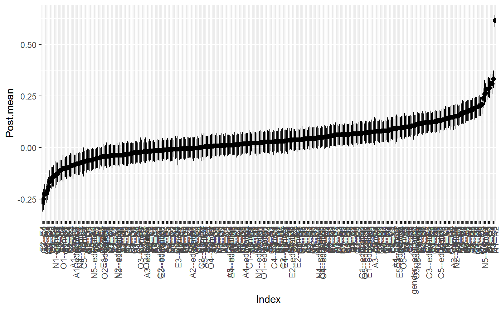#> BGGM: Bayesian Gaussian Graphical Models #> --- #> Type: mixed #> Analytic: FALSE #> Formula: #> Posterior Samples: 250 #> Credible Interval: 95 % #> --- #> Call: #> estimate(Y = Y, type = "mixed", iter = 250) #> --- #> Selected: #> #> 1 2 3 4 5 6 7 8 9 10 11 #> 1 0.000 -0.226 -0.149 0.067 0.000 0.067 0.000 0.125 0.145 0.000 0.135 #> 2 -0.226 0.000 0.286 0.203 0.100 0.000 0.000 0.174 0.000 0.086 0.000 #> 3 -0.149 0.286 0.000 0.167 0.284 0.000 0.000 0.000 0.000 0.000 0.062 #> 4 0.067 0.203 0.167 0.000 0.066 0.000 0.180 0.000 0.000 -0.107 0.000 #> 5 0.000 0.100 0.284 0.066 0.000 0.065 0.000 0.000 0.000 0.000 0.053 #> 6 0.067 0.000 0.000 0.000 0.065 0.000 0.289 0.146 -0.140 0.000 0.062 #> 7 0.000 0.000 0.000 0.180 0.000 0.289 0.000 0.156 -0.250 0.000 0.123 #> 8 0.125 0.174 0.000 0.000 0.000 0.146 0.156 0.000 -0.124 -0.189 0.045 #> 9 0.145 0.000 0.000 0.000 0.000 -0.140 -0.250 -0.124 0.000 0.333 0.100 #> 10 0.000 0.086 0.000 -0.107 0.000 0.000 0.000 -0.189 0.333 0.000 -0.086 #> 11 0.135 0.000 0.062 0.000 0.053 0.062 0.123 0.045 0.100 -0.086 0.000 #> 12 0.077 0.000 0.000 0.081 0.000 0.068 0.000 0.066 0.080 0.117 0.310 #> 13 0.069 -0.047 0.155 0.000 0.186 -0.051 0.000 0.000 0.066 -0.055 -0.081 #> 14 0.124 0.000 0.000 0.171 0.264 0.101 0.000 0.000 0.079 0.000 -0.208 #> 15 0.118 0.170 0.000 0.000 0.000 0.105 0.103 0.064 0.000 0.000 -0.072 #> 16 0.000 -0.078 0.000 0.059 -0.060 0.000 0.000 0.000 0.090 -0.078 0.000 #> 17 0.084 0.000 0.000 -0.098 0.000 0.000 0.000 0.000 -0.087 0.142 0.000 #> 18 0.000 0.000 0.000 0.000 0.000 0.062 0.000 0.000 0.000 0.000 0.000 #> 19 0.000 0.000 0.000 0.000 0.000 0.000 0.074 0.000 0.062 0.141 0.124 #> 20 0.000 0.000 -0.070 0.000 0.000 0.000 0.123 0.000 0.098 0.000 -0.100 #> 21 0.081 0.000 0.000 0.000 0.000 0.080 0.000 0.000 0.062 0.000 0.052 #> 22 0.000 0.077 0.000 0.000 0.000 0.000 0.064 0.000 0.148 0.082 0.061 #> 23 0.000 0.000 0.072 0.000 0.000 0.070 0.133 0.000 0.132 0.000 0.000 #> 24 -0.064 0.084 0.000 0.000 0.000 0.103 0.000 0.067 0.079 0.098 0.073 #> 25 0.127 0.000 0.000 0.064 0.000 0.000 0.000 0.125 0.190 0.000 0.119 #> 26 -0.084 0.150 0.077 0.094 0.000 0.000 0.000 0.000 0.000 0.000 0.000 #> 27 -0.080 0.000 0.000 0.000 0.000 0.070 0.000 0.123 0.051 0.132 0.073 #> 12 13 14 15 16 17 18 19 20 21 22 #> 1 0.077 0.069 0.124 0.118 0.000 0.084 0.000 0.000 0.000 0.081 0.000 #> 2 0.000 -0.047 0.000 0.170 -0.078 0.000 0.000 0.000 0.000 0.000 0.077 #> 3 0.000 0.155 0.000 0.000 0.000 0.000 0.000 0.000 -0.070 0.000 0.000 #> 4 0.081 0.000 0.171 0.000 0.059 -0.098 0.000 0.000 0.000 0.000 0.000 #> 5 0.000 0.186 0.264 0.000 -0.060 0.000 0.000 0.000 0.000 0.000 0.000 #> 6 0.068 -0.051 0.101 0.105 0.000 0.000 0.062 0.000 0.000 0.080 0.000 #> 7 0.000 0.000 0.000 0.103 0.000 0.000 0.000 0.074 0.123 0.000 0.064 #> 8 0.066 0.000 0.000 0.064 0.000 0.000 0.000 0.000 0.000 0.000 0.000 #> 9 0.080 0.066 0.079 0.000 0.090 -0.087 0.000 0.062 0.098 0.062 0.148 #> 10 0.117 -0.055 0.000 0.000 -0.078 0.142 0.000 0.141 0.000 0.000 0.082 #> 11 0.310 -0.081 -0.208 -0.072 0.000 0.000 0.000 0.124 -0.100 0.052 0.061 #> 12 0.000 -0.109 -0.263 -0.139 0.000 0.089 -0.058 0.057 0.126 0.000 0.000 #> 13 -0.109 0.000 0.108 0.153 0.000 0.000 0.093 0.000 0.000 0.166 0.000 #> 14 -0.263 0.108 0.000 0.000 0.000 0.000 0.000 -0.097 0.000 0.000 0.102 #> 15 -0.139 0.153 0.000 0.000 0.121 0.095 -0.066 -0.060 -0.115 0.180 0.000 #> 16 0.000 0.000 0.000 0.121 0.000 0.616 0.240 0.079 0.131 0.000 0.000 #> 17 0.089 0.000 0.000 0.095 0.616 0.000 0.162 0.000 0.000 0.000 0.058 #> 18 -0.058 0.093 0.000 -0.066 0.240 0.162 0.000 0.311 0.137 0.000 0.000 #> 19 0.057 0.000 -0.097 -0.060 0.079 0.000 0.311 0.000 0.173 0.000 0.000 #> 20 0.126 0.000 0.000 -0.115 0.131 0.000 0.137 0.173 0.000 -0.062 0.082 #> 21 0.000 0.166 0.000 0.180 0.000 0.000 0.000 0.000 -0.062 0.000 -0.099 #> 22 0.000 0.000 0.102 0.000 0.000 0.058 0.000 0.000 0.082 -0.099 0.000 #> 23 0.000 0.203 0.065 0.076 0.000 0.000 0.000 0.000 0.000 0.198 -0.221 #> 24 0.195 0.000 0.000 0.000 0.000 0.000 0.064 0.116 0.000 0.197 0.000 #> 25 0.073 0.000 0.185 0.000 0.117 -0.091 0.000 0.000 0.000 -0.061 0.210 #> 26 0.000 0.000 0.000 0.094 -0.137 0.153 0.114 -0.074 0.258 -0.101 0.000 #> 27 0.000 0.000 0.000 0.095 0.000 0.000 0.000 0.048 -0.056 0.000 0.000 #> 23 24 25 26 27 #> 1 0.000 -0.064 0.127 -0.084 -0.080 #> 2 0.000 0.084 0.000 0.150 0.000 #> 3 0.072 0.000 0.000 0.077 0.000 #> 4 0.000 0.000 0.064 0.094 0.000 #> 5 0.000 0.000 0.000 0.000 0.000 #> 6 0.070 0.103 0.000 0.000 0.070 #> 7 0.133 0.000 0.000 0.000 0.000 #> 8 0.000 0.067 0.125 0.000 0.123 #> 9 0.132 0.079 0.190 0.000 0.051 #> 10 0.000 0.098 0.000 0.000 0.132 #> 11 0.000 0.073 0.119 0.000 0.073 #> 12 0.000 0.195 0.073 0.000 0.000 #> 13 0.203 0.000 0.000 0.000 0.000 #> 14 0.065 0.000 0.185 0.000 0.000 #> 15 0.076 0.000 0.000 0.094 0.095 #> 16 0.000 0.000 0.117 -0.137 0.000 #> 17 0.000 0.000 -0.091 0.153 0.000 #> 18 0.000 0.064 0.000 0.114 0.000 #> 19 0.000 0.116 0.000 -0.074 0.048 #> 20 0.000 0.000 0.000 0.258 -0.056 #> 21 0.198 0.197 -0.061 -0.101 0.000 #> 22 -0.221 0.000 0.210 0.000 0.000 #> 23 0.000 0.147 -0.167 0.000 0.112 #> 24 0.147 0.000 -0.128 0.000 0.051 #> 25 -0.167 -0.128 0.000 0.098 0.072 #> 26 0.000 0.000 0.098 0.000 0.105 #> 27 0.112 0.051 0.072 0.105 0.000 #> ---#> $plt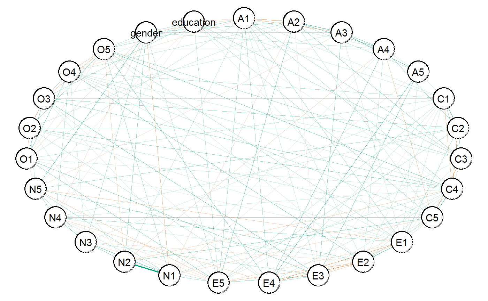#>################################## ## example 5: analytic solution ## ################################## # (only continuous) # data Y <- ptsd # fit model fit <- estimate(Y, analytic = TRUE) # summarize the partial correlations summary(fit)#> BGGM: Bayesian Gaussian Graphical Models #> --- #> Type: continuous #> Analytic: TRUE #> Formula: #> Posterior Samples: 5000 #> Observations (n): #> Nodes (p): 20 #> Relations: 190 #> --- #> Call: #> estimate(Y = Y, analytic = TRUE) #> --- #> Estimates: #> Relation Post.mean #> B1--B2 0.2027973789 #> B1--B3 0.0132823529 #> B2--B3 0.4080735573 #> B1--B4 0.3222792220 #> B2--B4 -0.0303248000 #> B3--B4 0.2523601896 #> B1--B5 0.1462698078 #> B2--B5 0.0339798736 #> B3--B5 0.1122010776 #> B4--B5 0.2262296149 #> B1--C1 -0.0388391528 #> B2--C1 -0.0216099814 #> B3--C1 -0.0343059048 #> B4--C1 0.1255667111 #> B5--C1 0.1961987518 #> B1--C2 -0.0584317567 #> B2--C2 0.1025395502 #> B3--C2 -0.0074361384 #> B4--C2 0.1604253921 #> B5--C2 0.1305172494 #> C1--C2 0.2020007774 #> B1--D1 0.0612902494 #> B2--D1 -0.0018479044 #> B3--D1 -0.0113596206 #> B4--D1 -0.0351424700 #> B5--D1 -0.0790961651 #> C1--D1 0.1166009910 #> C2--D1 0.0919407954 #> B1--D2 -0.0492808378 #> B2--D2 -0.0938785121 #> B3--D2 -0.1091124586 #> B4--D2 0.1847983864 #> B5--D2 -0.0535749916 #> C1--D2 -0.1309072627 #> C2--D2 -0.0267001648 #> D1--D2 0.0711541336 #> B1--D3 -0.0656220393 #> B2--D3 0.0388394308 #> B3--D3 0.0196263618 #> B4--D3 0.0908300661 #> B5--D3 0.0664425546 #> C1--D3 0.0951624253 #> C2--D3 0.0094014409 #> D1--D3 0.0879162815 #> D2--D3 0.0933449043 #> B1--D4 0.1997320319 #> B2--D4 0.0558654441 #> B3--D4 0.0234898760 #> B4--D4 0.0531767480 #> B5--D4 -0.0036457716 #> C1--D4 -0.0643229668 #> C2--D4 0.0014014304 #> D1--D4 0.0088405875 #> D2--D4 0.2289286546 #> D3--D4 0.4859806091 #> B1--D5 0.0956195318 #> B2--D5 0.0811330620 #> B3--D5 0.1182681384 #> B4--D5 -0.1143410118 #> B5--D5 -0.0140028717 #> C1--D5 0.0005412188 #> C2--D5 0.1942487210 #> D1--D5 -0.0310987369 #> D2--D5 0.2024871367 #> D3--D5 -0.1401995452 #> D4--D5 0.0482917290 #> B1--D6 0.0642159803 #> B2--D6 0.0508429185 #> B3--D6 -0.0640319720 #> B4--D6 -0.0775088519 #> B5--D6 -0.0556909294 #> C1--D6 0.0812229779 #> C2--D6 -0.0102684399 #> D1--D6 0.0011556400 #> D2--D6 0.0676007202 #> D3--D6 -0.0068682586 #> D4--D6 0.0634858455 #> D5--D6 0.1269839528 #> B1--D7 0.0339000412 #> B2--D7 -0.0922637301 #> B3--D7 0.1083182335 #> B4--D7 -0.1216609146 #> B5--D7 -0.0266257828 #> C1--D7 0.0231922303 #> C2--D7 0.1023695984 #> D1--D7 -0.0565860100 #> D2--D7 0.1621294879 #> D3--D7 -0.0545775164 #> D4--D7 -0.0503112697 #> D5--D7 0.0540270573 #> D6--D7 0.4526286144 #> B1--E1 0.0530442543 #> B2--E1 -0.0934403840 #> B3--E1 0.0092353626 #> B4--E1 0.0018452791 #> B5--E1 0.1980735727 #> C1--E1 -0.0400942390 #> C2--E1 0.1172940550 #> D1--E1 0.0301896138 #> D2--E1 0.1238368766 #> D3--E1 -0.0800255527 #> D4--E1 0.1787211218 #> D5--E1 0.0438190188 #> D6--E1 0.0032902037 #> D7--E1 0.1327295156 #> B1--E2 -0.0298320086 #> B2--E2 0.1754633539 #> B3--E2 -0.0046914838 #> B4--E2 -0.0527430546 #> B5--E2 -0.0381553636 #> C1--E2 0.0054164334 #> C2--E2 0.0392685185 #> D1--E2 0.1188722381 #> D2--E2 -0.0565514825 #> D3--E2 0.1357012367 #> D4--E2 -0.0326255510 #> D5--E2 -0.0022129848 #> D6--E2 0.0522050986 #> D7--E2 0.0734454622 #> E1--E2 0.2666218802 #> B1--E3 -0.0330041029 #> B2--E3 -0.0226697887 #> B3--E3 0.1181151943 #> B4--E3 -0.0082819036 #> B5--E3 -0.0385651533 #> C1--E3 0.1156557501 #> C2--E3 0.0189873590 #> D1--E3 0.0893240740 #> D2--E3 0.1114326088 #> D3--E3 -0.0510870786 #> D4--E3 0.0303388260 #> D5--E3 -0.0088871571 #> D6--E3 0.0606349870 #> D7--E3 0.0228630429 #> E1--E3 -0.0068059578 #> E2--E3 0.0532974761 #> B1--E4 -0.1490329931 #> B2--E4 0.1003595575 #> B3--E4 0.0552670184 #> B4--E4 0.0315296760 #> B5--E4 0.1848276701 #> C1--E4 -0.0450972044 #> C2--E4 0.0489693804 #> D1--E4 -0.0347973120 #> D2--E4 -0.0182285506 #> D3--E4 -0.1200212582 #> D4--E4 0.0657792941 #> D5--E4 0.0059486845 #> D6--E4 0.1599320862 #> D7--E4 -0.1158685733 #> E1--E4 0.0315421222 #> E2--E4 0.1314615526 #> E3--E4 0.3170184692 #> B1--E5 0.0318482254 #> B2--E5 -0.0726161979 #> B3--E5 0.0640753375 #> B4--E5 -0.0508988005 #> B5--E5 0.0245307069 #> C1--E5 -0.0106235526 #> C2--E5 -0.1709142011 #> D1--E5 0.1560877092 #> D2--E5 0.0453160599 #> D3--E5 0.1158040339 #> D4--E5 0.0062940066 #> D5--E5 0.3095593774 #> D6--E5 0.1241688016 #> D7--E5 0.0778732824 #> E1--E5 0.0201876408 #> E2--E5 -0.0509045141 #> E3--E5 -0.0443729894 #> E4--E5 0.1682010550 #> B1--E6 0.0408154564 #> B2--E6 0.1453515852 #> B3--E6 0.0577797248 #> B4--E6 0.0018712046 #> B5--E6 0.0767398023 #> C1--E6 -0.0121666502 #> C2--E6 -0.0586786709 #> D1--E6 -0.0357569599 #> D2--E6 -0.0253239141 #> D3--E6 0.0344802664 #> D4--E6 -0.0637421221 #> D5--E6 0.0078849427 #> D6--E6 0.1210176792 #> D7--E6 0.0506744022 #> E1--E6 0.0237003331 #> E2--E6 -0.0563471722 #> E3--E6 0.0568766027 #> E4--E6 0.0950031401 #> E5--E6 0.1932908285 #> ---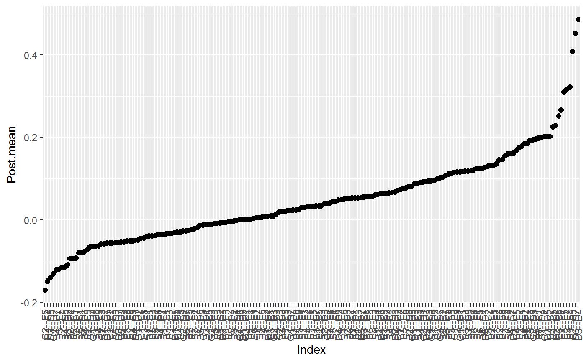#> BGGM: Bayesian Gaussian Graphical Models #> --- #> Type: continuous #> Analytic: TRUE #> Formula: #> Posterior Samples: 5000 #> Credible Interval: 95 % #> --- #> Call: #> estimate(Y = Y, analytic = TRUE) #> --- #> Selected: #> #> 1 2 3 4 5 6 7 8 9 10 11 12 #> 1 0.000 0.203 0.000 0.322 0.146 0.000 0.000 0.000 0.000 0.000 0.200 0.000 #> 2 0.203 0.000 0.408 0.000 0.000 0.000 0.000 0.000 0.000 0.000 0.000 0.000 #> 3 0.000 0.408 0.000 0.252 0.000 0.000 0.000 0.000 0.000 0.000 0.000 0.000 #> 4 0.322 0.000 0.252 0.000 0.226 0.000 0.160 0.000 0.185 0.000 0.000 0.000 #> 5 0.146 0.000 0.000 0.226 0.000 0.196 0.000 0.000 0.000 0.000 0.000 0.000 #> 6 0.000 0.000 0.000 0.000 0.196 0.000 0.202 0.000 0.000 0.000 0.000 0.000 #> 7 0.000 0.000 0.000 0.160 0.000 0.202 0.000 0.000 0.000 0.000 0.000 0.194 #> 8 0.000 0.000 0.000 0.000 0.000 0.000 0.000 0.000 0.000 0.000 0.000 0.000 #> 9 0.000 0.000 0.000 0.185 0.000 0.000 0.000 0.000 0.000 0.000 0.229 0.202 #> 10 0.000 0.000 0.000 0.000 0.000 0.000 0.000 0.000 0.000 0.000 0.486 -0.140 #> 11 0.200 0.000 0.000 0.000 0.000 0.000 0.000 0.000 0.229 0.486 0.000 0.000 #> 12 0.000 0.000 0.000 0.000 0.000 0.000 0.194 0.000 0.202 -0.140 0.000 0.000 #> 13 0.000 0.000 0.000 0.000 0.000 0.000 0.000 0.000 0.000 0.000 0.000 0.000 #> 14 0.000 0.000 0.000 0.000 0.000 0.000 0.000 0.000 0.162 0.000 0.000 0.000 #> 15 0.000 0.000 0.000 0.000 0.198 0.000 0.000 0.000 0.000 0.000 0.179 0.000 #> 16 0.000 0.175 0.000 0.000 0.000 0.000 0.000 0.000 0.000 0.000 0.000 0.000 #> 17 0.000 0.000 0.000 0.000 0.000 0.000 0.000 0.000 0.000 0.000 0.000 0.000 #> 18 -0.149 0.000 0.000 0.000 0.185 0.000 0.000 0.000 0.000 0.000 0.000 0.000 #> 19 0.000 0.000 0.000 0.000 0.000 0.000 -0.171 0.156 0.000 0.000 0.000 0.310 #> 20 0.000 0.145 0.000 0.000 0.000 0.000 0.000 0.000 0.000 0.000 0.000 0.000 #> 13 14 15 16 17 18 19 20 #> 1 0.000 0.000 0.000 0.000 0.000 -0.149 0.000 0.000 #> 2 0.000 0.000 0.000 0.175 0.000 0.000 0.000 0.145 #> 3 0.000 0.000 0.000 0.000 0.000 0.000 0.000 0.000 #> 4 0.000 0.000 0.000 0.000 0.000 0.000 0.000 0.000 #> 5 0.000 0.000 0.198 0.000 0.000 0.185 0.000 0.000 #> 6 0.000 0.000 0.000 0.000 0.000 0.000 0.000 0.000 #> 7 0.000 0.000 0.000 0.000 0.000 0.000 -0.171 0.000 #> 8 0.000 0.000 0.000 0.000 0.000 0.000 0.156 0.000 #> 9 0.000 0.162 0.000 0.000 0.000 0.000 0.000 0.000 #> 10 0.000 0.000 0.000 0.000 0.000 0.000 0.000 0.000 #> 11 0.000 0.000 0.179 0.000 0.000 0.000 0.000 0.000 #> 12 0.000 0.000 0.000 0.000 0.000 0.000 0.310 0.000 #> 13 0.000 0.453 0.000 0.000 0.000 0.160 0.000 0.000 #> 14 0.453 0.000 0.000 0.000 0.000 0.000 0.000 0.000 #> 15 0.000 0.000 0.000 0.267 0.000 0.000 0.000 0.000 #> 16 0.000 0.000 0.267 0.000 0.000 0.000 0.000 0.000 #> 17 0.000 0.000 0.000 0.000 0.000 0.317 0.000 0.000 #> 18 0.160 0.000 0.000 0.000 0.317 0.000 0.168 0.000 #> 19 0.000 0.000 0.000 0.000 0.000 0.168 0.000 0.193 #> 20 0.000 0.000 0.000 0.000 0.000 0.000 0.193 0.000 #> ---#> $plt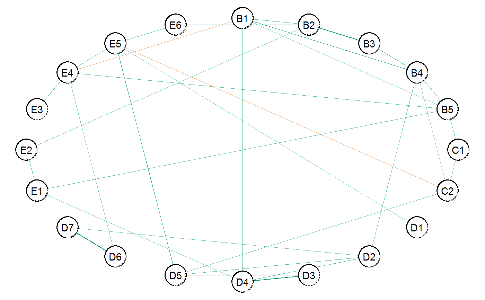#># }